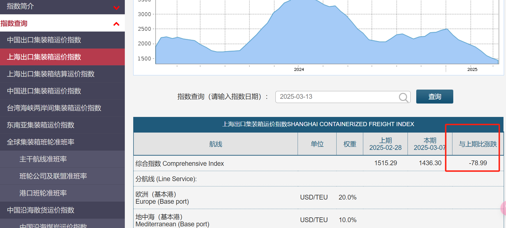
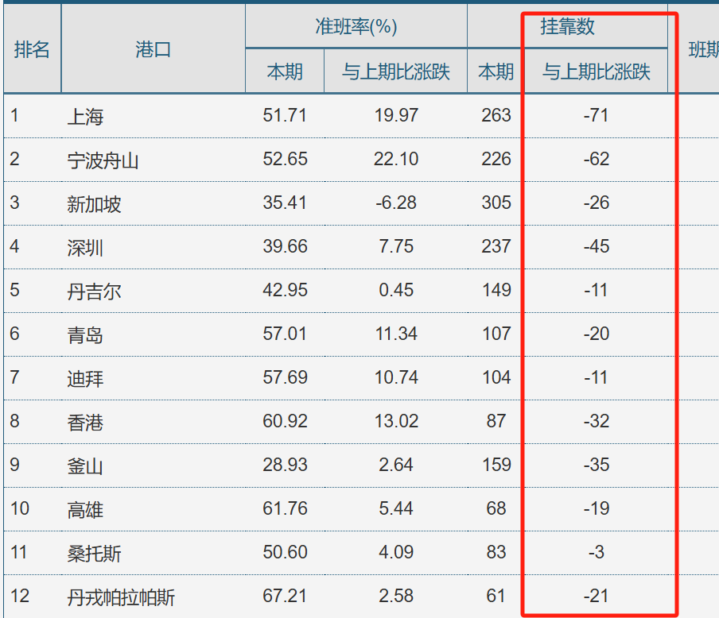
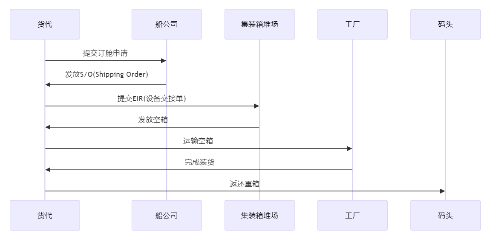
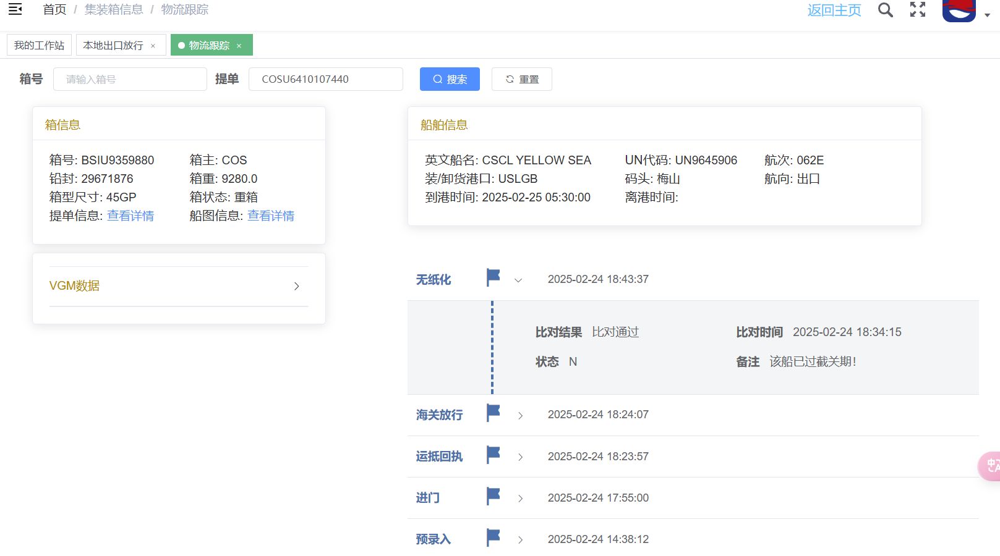
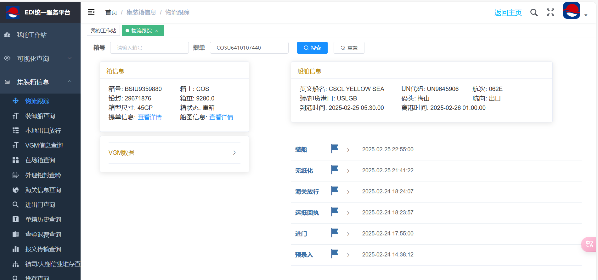
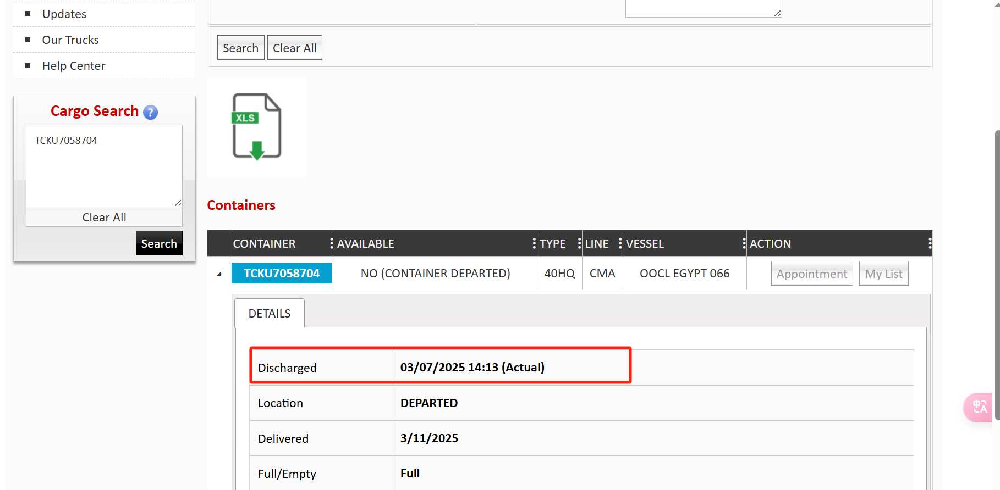
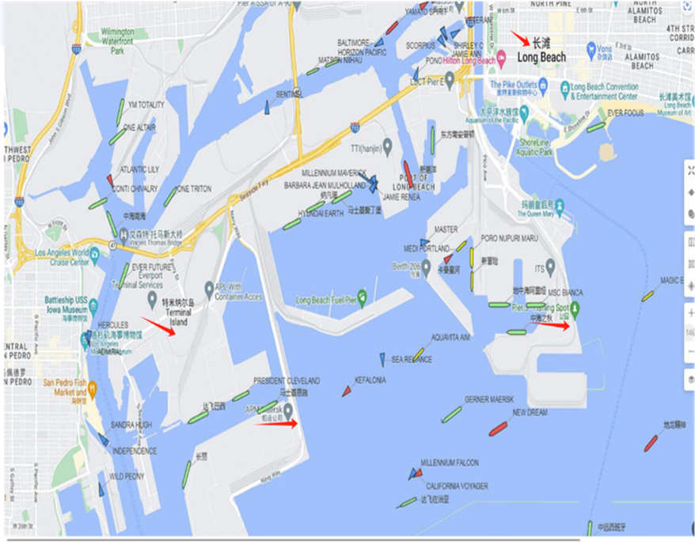
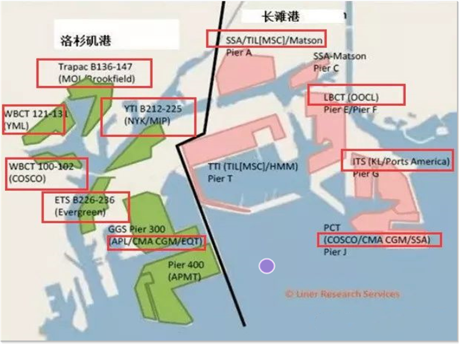
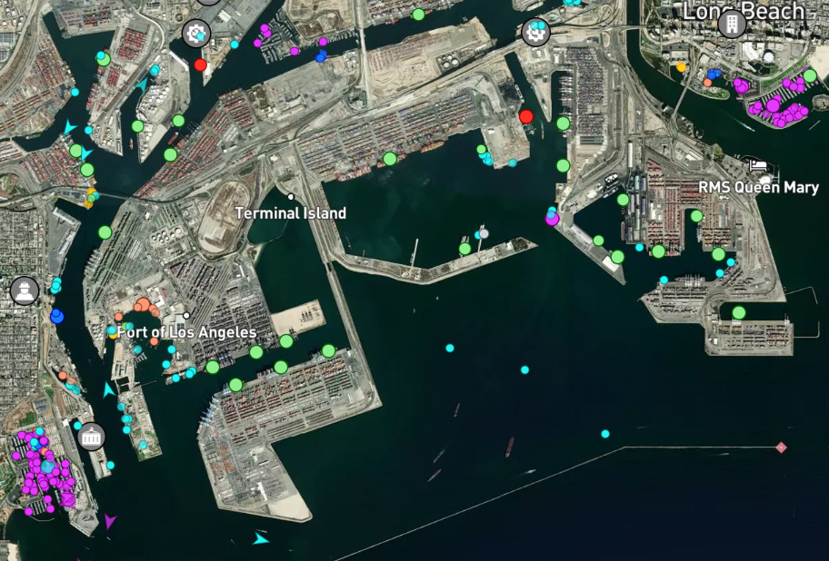
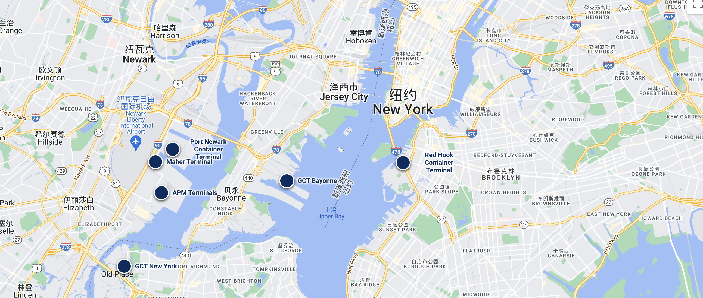

北美海运头程
头程交给计划和仓库的，是一个还能改得动的到仓日。每个节点用同一套字段：锁定什么、认哪个时点、变了当天做什么。
说明
延误／甩柜／拥堵压不住，但每一环要当天能感知；ETA 改一天，预约当天改；到港 ≠ 可提 ≠ 可售；柜延误 ≠ 真断货（去掉该柜后 90 天盖不住才升）。
已控 半控 缺口
| 节点 | 覆盖 | 一句话 |
|---|---|---|
| 订舱 / 船期 | 已控 | 认 S/O；变了当天重算交付与预约 |
| 做箱 / 装船 | 半控 | 认进港与 ATD；进港≠已装船 |
| 在途 | 已控 | 工作日早报盯 ETA；差 1 天进日报 |
| 提柜 / LFD | 半控 | 日报已按 LFD 代理剩≤2 天 P0；码头系统真 LFD 未接入 |
| 送仓 / 上架 | 半控 | 约仓按仓按周，不与海运天数相加 |
| 时效标杆 | 已控 | 从订舱确认起算；排产用「常见」列 |
细则见下方节点表、「风险与应对」「时效上架」。
| 节点 | 锁定什么 | 履约认的时点 | 变了当天做什么 |
|---|---|---|---|
| 订舱 | 这一水的舱、截港、目的港码头 | S/O 上的船名、航次、ETD | 船名或 ETD 变了，计划和预约同一天重算 |
| 做箱 | 截港前重箱进得了场 | 进港。预提和落箱只解决进场 | 截港当天还没进港，当天改下一水 |
| 装柜 | 货、数量、封号在离厂前被确认 | 八步里的书面确认。汇一、持创同一套 | 缺一步确认，司机不走 |
| 装船 | 这只箱上了这一水 | ATD。进港、放行、比对、装船都还在码头 | 计划离港日还在堆场，这一水交付日作废，改下一水 |
| 在途 | 仓库和 FBA 的窗口还守得住 | 船公司当天的 ETA | ETA 改一天，预约当天改 |
| 提货配送 | 可提，并且免费期还没用完 | 码头系统里的最后免费日。已卸还不能提 | 剩 2 天仍不可提或没有预约，当天报 |
| 还空 | 用箱和车架的钟停下来 | 空箱进了当天收这一箱型的地点 | 还空表不收，当天报，不等账单 |
业务大图
三条线：上面单据，中间箱子，下面清关。出口放行卡住装船，进口放行卡住提货。
进场看截港，海关放行看截关。两件事不是同一个时点。
HHO 视角
关注点：这一环出问题能不能当天感知；会不会把「柜延误」说成「已经断货」；ETA / 预约 / 可售有没有拆开。知识库：履约看板异常闭环、FBA 预约与库存风险、头程提前感知。
| 潜在风险 | 应该怎么应对 | 目前怎么应对 |
|---|---|---|
| 整条链只看「货在哪」，不知道今天催哪几柜、会不会断货 | 首页优先异常清单：柜号×SKU×目的仓×偏差×负责人×下一步；到港≠可售 | 履约看板 / 日报有在途与延误；异常闭环字段仍靠人工拼，不是每柜都有责任人和期限 |
| 把柜延误直接写成真断货，或反过来漏掉边际断货 | 先看「含该柜够不够」；只有去掉该柜后 90 天盖不住、去掉前盖得住，才升真断货风险 | 计划口径已写清；日报是否逐柜按边际规则标，仍要对照当日推送验收 |
订舱
船公司与航线
同一套字段：分组、船公司、产品、开船、航程、码头、用法。上海、宁波的天数在下一张，换季以这一水 S/O 为准。
| 分组 | 船公司 | 产品 | 开船 | 航程 | 码头 | 用法 |
|---|---|---|---|---|---|---|
| Gemini2025-01 起 | 马士基 MSK |
TP8、TP7 | — | 见下表 | — | 上海订 TP8，宁波订 TP7。到洛杉矶约 14 天，周班 |
| 赫伯罗特 HPL |
WC2、WC5 | — | 见下表 | — | WC2 对 TP8，WC5 对 TP7。订到的是同一组船期 | |
| 地中海单独运营 | MSC | 美西南 | — | 7 条 洛杉矶、长滩 | — | 订 Orient。上海到长滩 15 天，宁波 16 天 |
| 美西北 | — | 4 条 | — | 订 Chinook。上海到西雅图约 16 天，宁波约 18 天 | ||
| 美东 | — | 5 条 | — | 条数不能当船期。订之前要到具体航线名 | ||
| 以星非联盟成员 | ZIM | ZEX ZX2 |
盐田周三 ZX2 见用法 |
ZEX 约 12 天 | ZEX→ITS ZX2→TraPac |
盐田 ZEX 卸长滩 ITS。上海、宁波的 ZX2 卸洛杉矶 TraPac |
| 海洋联盟 | 中远 COSCO |
CEN、AAC、AAC4 | 上海、宁波 一周两班 |
见下表 | — | 上海、宁波用这三条。SEA、SEA3 从华南开 |
| 达飞 CMA |
EXX 鹰航快线 |
宁波周三 上海周四 |
洛杉矶 12 天 / 11 天 |
Fenix | 上海 11 天、宁波 12 天。优先靠泊是产品说法，提柜看当周闸口。另有美西南 11 条、美西北 4 条、美东 6 条 | |
| 长荣 EMC |
HTW 盐田快船 |
盐田周一 | 洛杉矶 14 天 | Everport | 盐田卸 Everport。上海、宁波订 CPS | |
| 东方海外 OOCL |
AAC4 | — | 见下表 | LBCT | 上海到长滩 13 天，宁波 15 天。先挂宁波，所以上海更快 | |
| Premier2025-02 起 | ONE HMM 阳明 |
PS4、PS6、PS8、PN3、EC1 | — | 公告未写天数 | PS8→ITS | 三家共舱。上海直达 PS4，两港都挂 PS6，宁波美西南 PS8。PS8 从 2026-09-03 起卸长滩 ITS |
| 美森独立运营 | MATSON | CLX | 宁波周二 上海周三 |
长滩 13 天 / 11 天 |
Pier C | 工作日到港次日可提。周末闸口关，顺延到下一个工作日。宁波另有示意图约 10 天，以 S/O 为准 |
| CLX+ | 宁波周三 上海周四 |
长滩 13 天 / 11 天 |
以 S/O 为准 | 2026 年 10 月长滩船期没有单独这一条。若仍在售，卸哪一家看该水 S/O | ||
| CCX | 宁波周二 上海周四 |
奥克兰 14 天 / 12 天 |
奥克兰专用 | 每 5 周 3 班。仓在长滩、洛杉矶订 CLX |
上海、宁波 → 美国
一般直航：观察·2026-10 跟踪 上海→洛杉矶中位约 15 天，宁波→洛杉矶约 14 天；产品宣传 快船可到 11–13 天。美东更长，Gemini 公布上海→纽约约 33 天、宁波→纽约约 38 天。同一产品若表内与示意图天数不一致（如美森），以这一水 S/O 为准。不挂这个港写「不挂」。
| 航线 | 船公司 | 上海出发 | 宁波出发 |
|---|---|---|---|
| EXX 鹰航快线 |
达飞 | 洛杉矶 11 天 Fenix |
洛杉矶 12 天 Fenix |
| CLX | 美森 | 长滩 10 天到港 第 11 天可提 |
长滩约 10 天 表上写 13 天 |
| ZX2 华中快线 |
以星 | 挂上海 天数未单列 |
洛杉矶 12.5 天 |
| TP8 / WC2 | 马士基 赫伯罗特 |
洛杉矶 14 天 | 不挂 |
| TP7 / WC5 | 马士基 赫伯罗特 |
不挂 | 洛杉矶 14 天 |
| CEN | 中远 | 长滩 16 天 鲁珀特王子港 11 天 |
不挂 |
| AAC | 中远 | 长滩 14 天 西雅图 22 天 |
长滩 13 天 西雅图 21 天 |
| AAC2 | 达飞、长荣共舱 中远一览 |
长滩 14 天 奥克兰 19 天 |
长滩 12 天 奥克兰 17 天 |
| AAC3 | 中远、万海、太平 | 长滩 14 天 | 长滩 13 天 |
| AAC4 | 东方海外 | 长滩 13 天 LBCT |
长滩 15 天 LBCT |
| Orient | 地中海 | 长滩 15 天 奥克兰 21 天 |
长滩 16 天 奥克兰 23 天 |
| CPS | 长荣 | 洛杉矶 17 天 奥克兰 26 天 |
洛杉矶 15 天 奥克兰 24 天 |
| PS4 | 海洋网联 Premier 共舱 |
直挂洛杉矶 / 长滩 天数未公布 |
不挂 |
| PS6 | 海洋网联 Premier 共舱 |
经光阳、釜山到洛杉矶 天数未公布 |
上海之后挂宁波 天数未公布 |
| PS8 | 海洋网联 Premier 共舱 |
不挂 | 青岛之后到洛杉矶 天数未公布 |
| PN3 | 海洋网联 Premier 共舱 |
经釜山到温哥华、塔科马 天数未公布 |
青岛之后、上海之前 天数未公布 |
| EC1 | 海洋网联 Premier 共舱 |
经釜山到纽约 天数未公布 |
上海之后挂宁波 天数未公布 |
SEA、SEA3、ZEX、HTW 不从上海、宁波开。SEA、SEA3 走华南，ZEX 卸长滩 ITS，长荣 HTW 走盐田。AAC2 在 2026 年海洋联盟新产品里改为卸洛杉矶，上表 12 天、14 天仍是中远一览里到长滩的天数。美森宁波：产品行写 13 天，这一行示意图约 10 天，两个数都留着，订这一水以 S/O 为准。
船期通常更早就能查到，公布后仍会改。建议在开船前约 30 天完成订舱。30 天是「尽早占舱」的提前量，不是「确认后天数」。确认舱位之后到离港，理想冲刺可压到约 7 天（优秀值，见时效页）；日常更常见约 14–21 天。起运港、目的港以这一水船期为准。
订舱时同时确认这一水停靠的目的港码头：专属码头还是公共码头，决定港后周末能否提柜、要不要预约。
怎么判断淡旺季
1、通过上海航运交易所 https://www.sse.net.cn/home 参考各种指数数据。
上海出口集装箱运价指数看的是价格，不能单凭它倒推货量和运力。挂靠数减少，常常是船公司主动抽船，货不多也会少挂靠。舱位紧不紧要三样一起看：运价在涨、准班率变差、货代反馈这一水订不到。
2、与货代核对这一水是否超售。货代能感觉到舱位松紧，用来印证上面三项，不能单独当成结论。
运价指数、挂靠原图


时间窗口
相对计划离港 ETD。表内写明：是港口和船公司的常见做法，不是法律规定。每一水以 S/O 上的截点为准。
1、航线班期：通常提前 4–8 周能看到挂哪些港、周几有船，换季会更早。没有「必须提前多少天定死航线」的规定。
2、这一水的船名、航次、ETD：开船前 2–4 周比较能用，之后仍可能换船、跳港或取消这一水。
3、一代（自己有船公司约价）订舱：航次在船公司系统打开后就能订，常见是 ETD 前 3–4 周。旺季要更早占舱，订了仍可能甩。
4、二手货代（自己没有约价，向一代或同行买舱）：通常更晚才给得稳，常见 ETD 前 7–14 天；舱紧时可能只剩 3–7 天，而且更容易被甩。二代的截单比船公司再早约半天到 1 天，因为资料还要转交一代。
5、开港：码头开始收重箱，常见 ETD 前 5–7 天，以这一水公布的开港时间为准。开港前不能进港。
6、提空柜、工厂装配：平季安排在截港前 1–2 天完成；工厂离港远，再提前 1 天。旺季预提是把提空提前 2–3 天，空箱免费期通常还没用完，重箱仍然必须在截港前进港。不要提前一周把空箱提出来。
7、截单、VGM、截关、截港：常见落在 ETD 前 1–3 天，小时以 S/O 为准。查验可能再占 1–2 天，不要卡在截港当天才进港。
8、申报不在上船之后。报关可以在进港前预录；海关放行要等进港后的运抵回执，并且必须在装船之前。去美国的 ISF，以及船公司或一代的 AMS 舱单，都要在装船前至少 24 小时提交。
9、装船在放行之后、离港之前，可以是离港前一天或当天。实际离港看 ATD，不看 ETD。
HHO 视角
关注点：这一环出问题能不能当天感知；会不会把「柜延误」说成「已经断货」；ETA / 预约 / 可售有没有拆开。知识库：履约看板异常闭环、FBA 预约与库存风险、头程提前感知。
| 潜在风险 | 应该怎么应对 | 目前怎么应对 |
|---|---|---|
| 甩柜 / 改船 / 改码头，计划交付日还按旧 S/O | 确认单核对船名航次 ETD 码头截点；变了当天重算交付和预约；书面保舱才算保舱 | 履约中台爬宁波未来船期；某一柜变了仍要人当天改计划，不自动改交付日 |
| 只看运价，漏掉抽船、准班、订不订得到 | 运价、准班、舱位三样一起看；挂靠变少当抽船信号 | 订舱表有产品与码头对照；淡旺季判断仍靠货代+船期密度，没有自动评分 |
做箱
做箱是把空箱提出来、拉到工厂装货、封好，再把重箱送进码头。它用的是订舱之后的放箱单，不检查这条船最后装不装得下。

| 步 | 动作 | 做什么 | 时点 |
|---|---|---|---|
| 1 | 放箱 | 船公司或堆场按 S/O 放出空箱，给出提箱堆场和箱型 | 订舱放箱之后。不等开港 |
| 2 | 打单 | 换设备交接单 EIR。提空、还重都要这张单 | 放箱之后 |
| 3 | 提空验箱 | 到指定堆场提空箱。看破洞、变形、气味、箱门、内高。不合格当场换，或先修再去工厂 | 开港前就可以。免费用箱从提空当天起算 |
| 4 | 工厂装货 | 装箱、过磅、上铅封。厂内八步确认见「装柜」。铅封号要和后来的舱单一致 | 开港前就可以。安排在截港前 1–2 天完成；工厂远，再早 1 天 |
| 5 | 重箱进港 | 重箱送进这一水的码头。进门后才有运抵，海关放行要等运抵 | 开港之后、截港之前。开港前进不去 |
开港前能不能做
| 动作 | 开港前 | 开港后到截港 |
|---|---|---|
| 提空、验箱、装货、封箱 | 可以 | 可以 |
| 重箱进码头 | 不可以。闸口不收这一水的重箱 | 可以。过了截港，这一水进不去 |
开港是码头开始收这一水的重箱，常见在 ETD 前 5–7 天。截港常见在 ETD 前 1–3 天。小时以这一水 S/O 为准。做早了的重箱只能落在工厂或外面堆场，等到开港再进。
超售了为什么还能做箱
超售是舱位卖多了，不是放箱系统把空箱停掉。订舱成功就有 S/O，堆场按 S/O 放空箱。提空、装货、进港走的是单证和闸口，不核对这条船还剩多少物理舱位。
甩柜发生在后面。船公司配载时按运价、货量和有没有赶上截港挑选，装不下的柜子改下一水。所以箱子可以做完，甚至已经进港，仍然上不了这一水。
甩了之后，拖车费和工厂装柜费已经发生。改配下一水时，重箱继续占着免费用箱天数和码头免费期，超了就按天收超期用箱和堆存。
预提要不要钱
预提是在计划装柜日之前把空箱提出来，落在工厂或外面堆场。开港前就可以预提。旺季可以用它锁定好箱子和车，让工厂按自己的时间装完，重箱赶得上截港。
它保住的是做得出箱、进得了港。船公司超售之后仍可能甩柜，预提改不了配载。甩到下一水，用箱天数继续算到真正装上船那天。
| 费用 | 公布价 | 怎么算 |
|---|---|---|
| 超期用箱 | 马士基华东（含上海、宁波）40HQ：前 7 天免费；第 8–15 天 200 元/天；第 16–20 天 500 元/天；第 21 天起 750 元/天。民生出口 40HQ：前 7 天免费；第 8–15 天 140 元/天 | 提空当天起，到装上船当天止，含周末。约价客户的免费期可以更长。退关不享受免费期 |
| 落箱 | 上海港外堆场 2025 年 8 月的一次调价：20 尺 300 元/次，40 尺 500 元/次，45 尺 600 元/次。宁波按各堆场自己的价 | 开港前已经装完，车不能一直背着，吊到港外堆场等开港 |
| 拖车、压车 | 没有统一价目 | 多跑一趟，或车在工厂过夜。订车时向车队要这一票的价 |
一只 40HQ 走马士基，提空后 7 个日历天内装上船，超期用箱是 0。多占 3 天是 200×3＝600 元。拖到第 16 天，当天变成 500 元。
旺季建议只提前 2–3 天提空。这段通常还在 7 天免费期里，超期用箱可以是 0。开港前必须落箱的，上海大柜按下面的市场参考，平时大约 500–600 元，场满大约 700–900 元。提前一周提空，免费期在进港前就会用完。截港前 1–2 天能装完并进港的，不必预提。
市场参考
公布价是价目表。下面是报道和公开价表里出现过的挂牌或报价，随当天堆场饱和度、车况改。同一天两家可以差一截。本公司协议价以车队、堆场当日报价为准。
| 项目 | 市场参考 | 看到的场合 |
|---|---|---|
| 落箱，40 尺，上海港外 | 2025 年 8 月，市场从大约 200 元调到大约 500 元。2026 年 8 月，外高桥附近一家堆场平时大柜大约 600 元；当天场满报到 700 元，8 月 12 日有货代报 900 元。堆场负责人说，旺季高位成交大约 800 元，挂到 1200 元是特殊收费。上千的报价多半是不想再收箱，不一定按这个数成交 | 恩尔仓储 2025-08-06 调价通知；每日经济新闻 2026-08-15 外高桥实探。台风前传过 6000 元，不当成市价 |
| 落箱，宁波 | 平时没有统一挂牌。2025 年 1 月 19 日 18 点起，舟信堆场把「暂放箱 + 进港」调到 1500 元/箱，同期个别堆场接近 2000 元 | 春节前爆场。当时北一集司、梅山堆存大约 95%，预进绿色通道暂停。这是那几天的价 |
| 拖车，宁波门点到港，40 尺 | 一份公开价表：北仑、小港大约 600 元，鄞州大约 800 元，海曙大约 1100–1200 元。远门点按里程另计。价表页面没有写年份 | 车少时在门点价上加。2025 年 1 月盐田有拖车报到 5500 元/柜、大约是平时的 3 倍，高价也不一定有车。2026 年春节前，上海有拖车费上涨约八成的报道 |
| 压夜 | 12.5 米到 17.5 米货车，压一夜常见 1000–1500 元。40 尺到厂免费装柜常见 3 小时，超时另收待时。小时单价各车队不同 | 国内货车压夜的常见口径。东方海外内陆条款写明超时和通宵另计，不报统一金额 |
| 超期用箱 | 市场不另挂一套价，按上一表的船公司价目。约价客户的免费期可以更长 | 马士基华东、民生出口的公布档 |
旺季插队要多少钱
旺季要插队，是舱位、空箱、车三处都在排队。多付的钱分三笔，合不进一个确保交付的总价。加价买到的是优先排队；装不装得上这一水，看配载和有没有书面不甩条款。
| 插的是什么 | 市场看到的加价 | 加上之后 |
|---|---|---|
| 舱位 | 2026 年 6 月 19 日，浙江在线引述嘉兴一家代订舱平台：少数船公司在美线、欧线推「钻石舱」，起步加价 1000 美元/大柜以上。2026 年 8 月 5 日工商时报当周货代参考：美西现货表价 6500–7200 美元/40 尺，合约配舱大约 5600–6200 美元，现货比合约大约贵 900–1000 美元 | 同一篇浙江在线写明，加了价，大部分美线舱位仍然订不到，船期往往再顺延一周，码头堆存另计。这 1000 美元是优先报价 |
| 空箱和进港 | 上海大柜落箱从平时大约 600 元抬到当场 700–900 元。宁波节前「暂放 + 进港」到 1500 元，个别接近 2000 元，同时预进通道会停 | 买到的是当天有地方落、开港后进得去。船公司超售之后仍可能甩柜 |
| 车 | 在门点价上加一截。极端拥堵时，有港口的拖车涨到大约 3 倍仍约不到车。车在工厂过夜，再加 1000–1500 元 | 买到的是这天有车来。车来了，船满了还是上不去 |
一只 40HQ，旺季既要插上一水，又要提前 2–3 天做箱：舱位按 2026 年 6 月钻石舱口径，至少多 1000 美元；上海落箱按当时满场大约 700–900 元；车若过夜，再加 1000–1500 元。用箱如果在提空后 7 个日历天内装上船，马士基华东的超期用箱仍是 0。三笔记三笔。
舱位已经书面确认、截港前 1–2 天也能装完进港的，不必为插队加价。
旺季为什么难做
| 卡在哪 | 原因 |
|---|---|
| 提不到空箱 | 船公司控箱，堆场没有合适的空箱。放箱单有了，也可能排到后面，或者提出来是坏箱。旺季当天换箱经常排不上 |
| 约不到车 | 车少。车队先接运价高、距离近的柜子。远工厂和临时加柜容易约不到，约了也可能取消 |
| 窗口太窄 | 重箱只能在开港和截港之间进场，常常只有几天。大家都挤在截港前 1–2 天，堆场、闸口、码头一起排队 |
| 做完仍可能甩 | 超售在配载时才见分晓。旺季被甩的多，车费和装柜费退不回来 |
码头不是凭一句「24 小时开放」就能提箱。堆场上班时间、放箱额度、车和箱况，才决定这一天做不做得成。
验箱
箱型、内寸、载重和码头要求见「箱型」sheet。提空时量内高、看破损潮湿，拍照。装不下就在堆场换，不要拉到工厂才发现。旺季换箱要留出同一天提第二只的时间。
车上有 GPS 可以看空箱到哪了。表里的浙B5E852 是当时的一个车号，不是固定车队。
HHO 视角
关注点：这一环出问题能不能当天感知；会不会把「柜延误」说成「已经断货」；ETA / 预约 / 可售有没有拆开。知识库：履约看板异常闭环、FBA 预约与库存风险、头程提前感知。
| 潜在风险 | 应该怎么应对 | 目前怎么应对 |
|---|---|---|
| 截港前重箱进不了场，这一水没了；预提花了钱仍可能甩 | 开港后截港前进港；截港当天未进港当天改下一水；预提只买进场不买交付 | 长荣/中远/东方海外/森罗可查进港；查不到的看互邦、长河有没有写进港 |
箱型
代码、口语、内寸、载重对着看。群里说「高柜」「小柜」时，订舱单上仍要写成 40HQ、20GP。载重以箱门 CSC 铭牌和船公司放箱为准。
常见箱型
| 箱型代码 | 行业口语 | 内部尺寸（约） | 载重（约） | 适用货物 |
|---|---|---|---|---|
| 20GP / 20DV | 小柜、20 尺、20 普柜 | 5.9×2.35×2.39m | 21.8 吨 | 普通干货、重货。体积小、单票重的优先 |
| 40GP / 40DV | 中柜、平柜、40 普柜、大柜（有人笼统把 40 尺都叫大柜） | 12.03×2.35×2.39m | 26–28 吨 | 普通干货。内高不够时改订高柜。口语「大柜」含糊时，要问清是普柜还是高柜 |
| 40HQ / 40HC | 高柜、40 高柜、大高柜 | 12.03×2.35×2.69m | 26.5 吨 | 轻抛货、家电。美线最常用。旧箱内高会矮一截，提空时量一下 |
| 45HC / 45HQ | 45 尺、45 高柜、超长柜 | 13.56×2.35×2.69m | 27.7 吨 | 家具、纺织品。美国部分码头还空对 45 尺另有规则 |
| 20RF | 20 冻柜、小冻柜、20 冷柜 | 约 5.4×2.29×2.27m | 约 21–27 吨 | 短柜冷链。要插电、设温度 |
| 40RH / 40RF | 冻柜、冷柜、40 冻柜（有人口语也叫冰柜） | 11.5×2.28×2.54m | 30.4 吨 | 冷链。全程要有电。温度写进 S/O。说「冻柜」默认多指 40 尺，订舱仍要写清 20 还是 40 |
| 20OT / 40OT | 开顶、开顶柜、OT | 20 尺约 5.89×2.35×2.34m；40 尺更长 | 20 尺约 21.6 吨 | 超高机械、吊装货。超高部分算 OOG |
| 20FR / 40FR | 框架、框架柜、FR | 无箱壁，底板和端架 | 按铭牌 | 超宽、超长、重件。订舱报长宽高和重心 |
| 平板 / Platform | 平板、平台柜 | 无端墙或端墙放倒 | 按铭牌 | 超长件。常按特种箱管 |
| 罐箱 / Tank | 罐柜、tank 柜 | 罐体在框架内 | 按罐体额定 | 液体、化工。危品另走 |
| 双开门 / 侧开门 | 双开门、侧开门、开门柜 | 接近同尺干箱 | 接近同尺干箱 | 舱位少，订舱写清代码，不要只说「特殊柜」 |
口语对照：小柜＝20 尺；中柜／平柜＝40 普柜（40GP）；高柜＝40HQ；45 尺要单说。有人把所有 40 尺都叫「大柜」，群里确认时要落到代码。GP=普柜，HQ/HC=高柜，RF/RH=冻柜，OT=开顶，FR=框架。VGM 是整箱毛重，不能超过铭牌最大总重。
各码头对这类柜子的要求
干箱走普通闸口和预约。冷柜、开顶、框架、超限（OOG）在免费期、预约、吊机上另有规则。下表是页面里已经核对过的码头口径，某一水以该码头当天系统为准。
| 箱型类别 | 起运港（上海 / 宁波） | 美西码头 | 美东码头 |
|---|---|---|---|
| 干箱 小柜 / 中柜 / 高柜 |
开港后、截港前进闸。闸口对柜号、封号、订舱号、箱型。VGM、截单按 S/O。落箱按尺码计次 | 多数洛杉矶、长滩要预约才能提。还空看当天按船公司+箱型公布的还空表。TraPac 一例：同一班里 20/40 和 45 的收法可以不同 | PNCT 普通进出多不预约。APM Elizabeth 要 TERMPoint 预约。Maher 普通拖车不预约。干箱免费常见 4 天（工作日或开门日，看码头） |
| 45HC | 放箱、落箱、车型都按 45 尺。不是所有堆场、车队都常备 | 还空更紧。TraPac 洛杉矶曾出现：45 尺只收「提重同时还空」，单独还空不收。提之前先看当天 empty board | 按该码头是否收 45 尺、是否要预约。不要用 40 尺的还空习惯套 45 |
| 冷冻柜 | 订舱写温度。提空查机组，装货后插电或发电机。进港后码头要有插头位。冷柜预提、用箱时钟按船公司冷柜价目 | TraPac：进口冷柜免费 2 天（干箱 4 天）。自动化日开闸时，冷柜仍要预约。卸下后要插电，缺插头会拖可提时间 | PNCT、APM、Maher：冷柜免费常见 2 天，短于干箱。周末闸口不开的日子通常不计免费期。提柜要确认插头和预约窗口 |
| 开顶 / 框架 / 平板 （含 OOG） |
订舱报外尺寸和超限部位。可能要特殊放箱、绑扎照片、超限附加费。截港和配载更严，容易被留到下一水 | 按超限货管。闸口、吊具、堆位与干箱不同。提柜常要特种预约或白天班。不要按普通干箱的预约名额去赌 | APM Elizabeth：超限货和框架捆可以不走普通 TERMPoint，但要按码头特种规则约。Maher：普通拖车不约，超限货的吊机要预约。PNCT：框架、开顶免费常见 2 天 |
| 罐箱 / 危品 | 适装、危申、UN 编号与普货分开。堆场和船公司都可能拒收临近截港的危品柜 | 危品堆位、查验、提柜窗口单独管。费用和停留规则看船公司与码头危品条款，不套干箱 demurrage 口算 | 同上。纽约港查验点与干箱分流。Red Hook 等支线码头不是亚洲干线主卸点，罐箱/危品不要按那里排 |
和免费期、还空的关系
| 看什么 | 干箱 | 冷柜 / 开顶 / 框架 |
|---|---|---|
| 码头堆存免费 | TraPac 洛杉矶普柜 4 天；美东多家干箱常见 4 个工作日或开门日 | 同一家码头常常只有 2 天。LFD 以系统为准，不要用干箱的 4 天去加 |
| 预约 | 美西多数要约；美东看码头 | 冷柜、超限往往额外要约或只能走指定班次。约不到，干箱的「免费期内挪 LFD」规则（纽约 APM）不一定套给特种箱 |
| 还空 | 按船公司+尺码看当天表 | 冷柜要还到收机组的地点；开顶、框架可能指定堆场。表上不收这一型，per diem 和车架继续走 |
| 车架 | 美西南 DCLI 约 47.50 美元/日历天 | 特种箱可能要特种车架或超限拖车，车队另报，不套普通柜日租口算 |
订舱时箱型写进 S/O。改箱型等于改放箱、改车、改码头预约和还空规则。美线家电、轻抛货默认先按 40HQ 想；超高、超宽在工厂量完再定开顶或框架，不要先订干箱再现场改。
HHO 视角
关注点：这一环出问题能不能当天感知；会不会把「柜延误」说成「已经断货」；ETA / 预约 / 可售有没有拆开。知识库：履约看板异常闭环、FBA 预约与库存风险、头程提前感知。
| 潜在风险 | 应该怎么应对 | 目前怎么应对 |
|---|---|---|
| 口语「高柜」和订舱箱型不一致，或冷柜/OOG 按干箱约闸口 | 订舱单写 40HQ/20GP 等代码；特种箱按码头特种规则约闸口和吊机 | 箱型 sheet 已对口语与代码；特种箱某一水仍认码头当天系统 |
装柜
空箱到厂之后、封柜离厂之前，是装柜。做箱负责把合格空箱送到工厂；这一节负责货装进这只箱、数量和封号被确认、司机再走。
下面八步是原先定的供应商装柜要求，玉桃按这个梳理过。汇一、持创按同一套执行。每一步都要等 HHO 在群里书面回复。任何一步没有书面确认就往下做，后果和费用由工厂承担。
风险点和关键点
| 风险 | 现在怎么克服 | 放过会怎样 |
|---|---|---|
| 标贴错 | 贴标前，产品标签、外箱箱唛、特殊标都要和实物同框。群里回复「标签 OK」才贴 | 标贴上去再发现错，外箱要撕、重印、重贴。北美仓和报关对的是标和箱唛 |
| 货不对 | 装箱前看整件颜色、适配器、说明书。回复「商品 OK」才装 | 这三样从外箱上看不出来。纸箱封上以后只能拆箱。适配器规格不对，到了目的国不能卖 |
| 箱和车对不上 | 司机姓名牌、车牌、柜号、铅封号同框。回复「车辆 OK」才继续 | 柜号和封号要写进舱单、提单。到的不是这一票 S/O 的箱子，进港会被拒 |
| 坏箱装了货 | 空柜内部全景和四角先拍。破损、变形、潮湿、异味当场说明。没有指令不准装 | 货损之后要分清是箱子原有问题还是装货以后造成的。装完才发现，货已经脏了 |
| SKU 和数量错 | 开装前拍整体、标贴近拍、商品特写，并附 SKU 和数量。回复「清单 OK」才装货 | 混柜少一个 SKU，到港对不上入库。装到一半才发现，已经占用柜和车 |
| 装的过程说不清 | 1/4 柜、半柜、满柜三张，装的时候就发到群里 | 只留一张满柜照，看不出下面垫了什么、中途有没有换货。短装和货损对不上层 |
| 封早了 | 关门前满柜全景要看得见货，加上最终装柜清单。回复「数量无误」才封柜 | 封条一上再点数，就要剪封、换封，舱单上的封号跟着改。赶上截港时常常来不及 |
| 人走了封号没留下 | 封柜全景和铅封条扣紧特写，封条号要清晰。回复「封柜 OK」司机才离厂 | 铅封是离厂到目的港开箱前的锁。扣不紧，途中可以打开。司机走了，工厂就看不到这只箱 |
装柜八步
逐条执行。第 1、2、3、5、7、8 步要等群里这句书面回复：标签 OK、商品 OK、车辆 OK、清单 OK、数量无误、封柜 OK。第 4 步在 HHO 指令下来之前不准装。第 6 步是装货当时把 1/4 柜、半柜、满柜发到群里，封柜仍然等第 7 步的「数量无误」。
| 步 | 做什么，停在哪 | 为什么这样要求 |
|---|---|---|
| 1 贴标前 | 先拍照：产品标签与实物同框，外箱箱唛与实物同框，所有特殊标贴。发到 HHO 群。收到「标签 OK」才可贴标 | 标和货必须是同一件，才能让后面的人核对。贴完再改，外箱和人工都已经发生。特殊标漏贴，到港会被扣或拒收 |
| 2 商品核验 | 装柜或散货装箱前拍照：整件商品颜色、适配器、说明书。收到「商品 OK」才允许装箱、装柜 | 颜色、适配器、说明书是最容易装错、外箱又看不出来的三项。这一步放在封纸箱之前，拆箱成本还没发生 |
| 3 车辆信息 | 空柜到场后拍照：司机姓名牌、车牌、柜号、铅封号同框。收到「车辆 OK」才进入下一步 | 四项在一张照片里，避免柜号、封号、车牌各拍各的、事后对不上。司机和车牌是这只箱离厂到进港的责任人 |
| 4 空柜检查 | 拍照：空柜内部全景，加四角特写。破损、变形、潮湿、异味立即拍照并说明。未获 HHO 指令前严禁装柜 | 堆场验过一次，到厂还要再验。路上可能换成另一只箱。装货前的照片，是这只箱在装货时完好的证据 |
| 5 装柜清单复核 | 开始装货前拍照：商品整体摆拍、标贴近拍、商品特写，并附 SKU 和数量清单。收到「清单 OK」后开始装货 | 这一票装哪些 SKU、各多少，用清单对即将进柜的实物。仓库自己的拣货单不能代替群里的确认 |
| 6 装货过程 | 装货中分阶段拍照：1/4 柜、半柜、满柜（关门前全景）。实时发到 HHO 群 | 三张按时间留下装载顺序。短装、混装、中途换货，能对上是在哪一层发生的 |
| 7 满柜，封柜前 | 装货完毕、关门前拍照：满柜全景，要看得见全部货物，加最终装柜清单。收到「数量无误」才可封柜 | 这是点数的最后一次。门关上再改数量，铅封和舱单一起改，截港窗口往往不够用 |
| 8 封柜后 | 拍照：封柜全景，铅封条扣紧特写，封条号清晰。收到「封柜 OK」后司机方可离厂 | 封号要和后来的舱单一致，扣紧才不能在途中打开。离厂前把封号固定在照片里，司机再走 |
拍照要求：原图、无美颜、带时间水印。原图和水印用来证明是装柜当时拍的，标、柜号、封号都看得清。
30 分钟内没有收到 HHO 回复，用电话或微信再提醒一次。车停在工厂，待时和截港都在走；提醒只为了尽快拿到书面回复。下一步仍然等群里那一句 OK。
HHO 视角
关注点：这一环出问题能不能当天感知；会不会把「柜延误」说成「已经断货」；ETA / 预约 / 可售有没有拆开。知识库：履约看板异常闭环、FBA 预约与库存风险、头程提前感知。
| 潜在风险 | 应该怎么应对 | 目前怎么应对 |
|---|---|---|
| 错标错货错数封早了，到美查验/拒收才发现，缺货窗口已丢 | 汇一/持创八步书面确认；缺确认司机不走；封号照片离厂前留底 | 靠群确认；八个确认时间没有系统台账，靠有人盯 |
放行装船
重箱进的是这一水 S/O 上的码头闸口。进门之后先落在出口堆场，海关放行、比对通过，船靠泊叫到这只箱，才从堆场吊上船。左边是箱子怎么走，右边是同一时刻的单据、清关，或这一步走不通时去哪。
怎么入港
| 步 | 发生什么 | 这一票的时刻 |
|---|---|---|
| 1 预录入 | 报关资料先交给海关。这一步可以在进门前做，放行要等运抵 | 2 月 24 日 14:38 |
| 2 进门 | 开港之后、截港之前，拖车到闸口。闸口对柜号、铅封、订舱号、箱型。过了才算进港 | 2 月 24 日 17:55 |
| 3 运抵 | 码头确认箱子已经在场，向海关发运抵。没有运抵，海关不放行 | 2 月 24 日 18:23，进门后约半小时 |
| 4 海关放行 | 海关对上运抵和预录入。查验会把这里拉长 1–2 天 | 2 月 24 日 18:24 |
| 5 无纸化比对 | 码头用海关放行信息比对。比对通过，这只箱子才允许配进装船。备注「该船已过截关期」是赶上了这一水的截关 | 2 月 24 日 18:34 |
| 6 装船 | 船靠泊、配载叫到这只箱，堆场送到岸边，岸桥吊上船。截单和 VGM 也要在各自截点前交齐 | 2 月 25 日 22:55，进门后约 29 小时 |
例子是表内原图：柜号 BSIU9359880，提单 COSU6410107440，船 CSCL YELLOW SEA 航次 062E，宁波梅山出口，卸货港 USLGB。上海、宁波顺序相同，小时以这一水 S/O 为准。开港前进不了闸口。过了截港，正常闸口不再收这一水；临时再开的口子见下面「加载」。
进港后先落堆场
闸口后面是出口堆场。集卡在闸口把箱子交给码头，箱子落在堆场的贝位里，等这艘船靠泊。船靠上、配载叫到箱号，堆场机械才把它送到岸桥，岸桥吊上船。
这一票从 24 日 17:55 进门，到 25 日 22:55 才有装船，中间在堆场停了大约一天。放行和比对都在进门后一小时内完成，完成的时候箱子还在堆场上。
船已经靠泊、码头单独允许时，才有从集卡直接交到岸桥的直装。美线的常态是先落堆场。比对通过也还不等于装上这一水，配载仍然可以甩到下一水。
截港过了，黄牛加载是干什么
加载又叫晚集港、加急进港。公布的截港一到，闸口按计划不再收这一水的重箱，好让码头配舱。船还没离泊时，船公司可以单独同意某几只晚到的箱子，通知闸口再开一小段时间，收完这几只再关上。黄牛卖的就是这扇临时闸口。
他能在截港之后继续卖、而且卖给不止一个货主，是因为这个口子当时还没数清。船公司订舱时就会超售，放出的舱位比船能装的多，用来对冲订了却没来的柜子。实际进港比超售数少，晚到的箱子还有位置可加；来得多，多出来的就被甩。黄牛在空位还没点清的时候，就把「我能让你进」卖出去。卖出的票数可以多于闸口真正肯收的箱数。后到的、船公司没点头的，车开到门口也进不去。
同意收的时候，闸口常常只为点名的那只箱子开很短一会儿，不是把截港改回到原来的钟点、所有晚到的车都能进。码头堆场满了，或者这一层舱已经装完、再加就要大翻倒，船公司也可以不收。内支线经常没有加载，放行晚了就改下一水。
| 买到的是什么 | 还要另过的关 | 费用 |
|---|---|---|
| 截港之后，这一只箱子被闸口临时收下，落进堆场 | 进门之后仍要运抵、海关放行、比对、配载叫到。截关过了、海关不放行，箱子在场里也上不了船 | 晚集港另收加急费。晚到导致翻舱的，再加翻倒费。没有统一价目 |
| 有人把已经在场的箱子盯住，让配载不要拿掉。这叫盯箱，和截港后才进门不是同一笔 | 船公司书面保箱才算留位。口头说能上，配载仍可以甩 | 有操作记录写过：马士基保箱大约 600 元一只；黄牛盯箱大约 600–1000 元，越接近开船越贵。这是个别航次里出现过的数，不是价目表 |
倒卖舱位发生在截港之前，卖的是订舱名额。加载发生在截港之后，卖的是还能不能进这扇闸口。两笔都可能超售：承诺在前，船上的位置在后。
船公司为什么还开这个口子
截港是为了冻结配载。码头要按卸货港、重量把箱子堆好，岸桥才按顺序吊。这个钟点早于最后一吊。船还靠着、舱盖还没盖死的时候，计划里的空位还在。
空位来自超售。订了舱却没来的柜子，截港之后才数得清。船反正要开，空着一个舱位，这一水的运费就没了。晚到的箱子若还能放进剩下的格子，船公司收得回这一票运费，再加一笔晚集港费。格子已经没了、再加就要把已装的一层翻出来，这个口子就关上。
码头为什么接受
闸口认的是船公司重新写进装船清单的柜号。船公司通知「这只可以收」，码头才把闸口为它再开一会儿。黄牛说了不算，清单上没有这个柜号，车就进不去。
收下之后的动作码头都收费：进闸、落堆场，插进已经堆好的列里还要翻倒。船还在靠、这一贝还能吊，多一只箱子就是多几次计费的动作。晚到的箱子会把整艘船拖过泊位窗口的，码头会回绝。泊位、引航和后面排队的船，比一只柜子的装卸费贵。
台风为什么会把后面整段打乱
码头的计划是一条按小时排好的队：哪艘船几点引航进槽、靠哪个泊位、桥吊干几个班、下一艘什么时候顶上。台风一来，引航停、桥吊绑住、闸口和进港的路一起关。停掉的那几个小时从队列里空掉，后面已经在路上的船不会把窗口让出来重排。
风停只是桥吊可以再动。锚地里积着没靠上的船，加上准点赶到的下一水，抢的是同一段泊位。一天的桥吊班次装不完三天的船。船在泊位上多停一天，后面每一艘都顺延。上海晚两天，这艘船到宁波、再到美国的靠泊一起晚。赶不上下一个窗口的，会跳过这个港，箱子改走下一水或用支线转过去。
| 风停之后还堵在哪 | 为什么恢复不了原计划 |
|---|---|
| 泊位 | 停航那几天的船还在锚地。泊位一天只能靠这么多艘，队列要好几天到几周才消化完 |
| 堆场 | 该装走的重箱没走，该提走的进口箱也提不走，场地先满。满了就既不好卸船，也不收新的出口箱 |
| 开港和截港 | 船期一改，S/O 上的开港、截港一起改，而且经常到当天下午才看得到晚上开不开。工厂已经做完的箱子只能落在港外 |
| 车和闸口 | 路一通，积了几天的集卡同一天涌向闸口。闸口、堆场、桥吊再按各自的班次一辆辆收 |
2026 年 8 月台风「白海豚」过后，每日经济新闻记的是：两港停摆大约 70 小时，上海和宁波舟山大约 40 万标箱滞留，上海锚地一度约 200 艘，等泊从大约 12 天降到 7 天，预计 9 月底才消化完。东海大桥一通，当天约 3 万辆集卡涌向码头。这是这一次的数，每次台风的天数不同，队列叠在一起的方式一样。
开港后几天离港
美线没有统一的「开港后第几天必须走」。开港常见在计划离港 ETD 前 5–7 天，所以从开港到计划离港大约 5–7 天。这 5–7 天是码头收重箱的窗口，船大部分时间还不在泊位上。
截港常见在 ETD 前 1–3 天。箱子多在离港前 1–3 天进场，在堆场里等船。船靠上以后，装货集中在离港前一天到当天。这一票船舶信息写到港 2 月 25 日 05:30、离港 2 月 26 日 01:00，靠泊装货大约十几个小时。表上「至少离港前 2 天进场」过死，最晚时点是这一水的截港。
上面都是计划。风、泊位、前一艘船没走完，实际离港 ATD 会晚于 ETD。
怎么确认真的离港了
| 看到什么 | 说明什么 | 这一票 |
|---|---|---|
| 装船节点有时刻 | 这只箱子已经吊上船。船还可以继续靠着装别的柜子 | 2 月 25 日 22:55 才出现。前一张图只有比对，没有装船 |
| 船舶信息里的到港、离港时间 | 这一格会先写计划。时刻还没到，不能当成已经发生 | 第一张图最新节点是 24 日 18:43，到港时间已经写成 25 日 05:30，离港时间还是空的。第二张图才写上离港 26 日 01:00 |
| 船公司或货代跟踪里的 ATD、Vessel Departed | 船公司按实际离泊记下的开船。ETD 从订舱起就有，一直看着 ETD 不能证明船走了 | 以跟踪里的 ATD 对上面那个离港时刻。两个都过去了，才算这艘船离开梅山 |
| AIS 船位 | 船离开泊位、状态在航。单证补录会晚几个小时，船位单独能看 | 用船名 CSCL YELLOW SEA 对航次 062E。还停在梅山，就是没走 |
海关放行、比对通过都发生在装船前。这一票 18:34 已经比对通过，船次日夜间才装这只箱，离港时间写在又过了大约两小时之后。


HHO 视角
关注点：这一环出问题能不能当天感知；会不会把「柜延误」说成「已经断货」；ETA / 预约 / 可售有没有拆开。知识库：履约看板异常闭环、FBA 预约与库存风险、头程提前感知。
| 潜在风险 | 应该怎么应对 | 目前怎么应对 |
|---|---|---|
| 进港放行了但没上这一水；交付日仍按计划开船 | 认 ATD；计划离港日还在堆场则这一水作废改下一水并问亏舱 | 船司追踪能分已进港/已装船的目前是长荣、中远/东方海外、森罗，且常晚 2 天才叫 |
海运在途
在途从实际离港 ATD 之后开始，到目的港卸进堆场为止。船走了没有，在上一节用 ATD 和 AIS 确认。这一段盯的是船还在不在原计划上，以及到港时间有没有改。
监控标准（HHO）：在途日报每个工作日早上跑；船位/换船/ETA 变更当天进日报——差 1 天也记。行业旧表常见「一周三次」，我们不退回那个节奏。延误标签：相对计划偏晚 ≥3 天打「延误」（脚本 GAP_DAYS=3）；与「差 1 天写进日报」是两件事，不要混成一个阈值。
| 看什么 | 看哪里 | 改了要做什么 |
|---|---|---|
| 船位和航速 | 船公司或货代跟踪，对照 AIS。船名、航次要和提单一致 | 船停在锚地、折返、或几天几乎不动，先问货代是等泊、绕航还是机器故障 |
| 中转、换船、跳港 | 跟踪里的二程船名。直航中途改成中转，或中转港没装上二程，都算断了原计划 | 柜子还在中转港，ETA 按新船重算。通知计划改交付，不要沿用订舱时的到港日 |
| ETA | 船公司公布的预计到港。每次改动都记下来，对原来的到仓或入库窗口 | 晚一天就改后面的预约。等到靠港再改，仓库和 FBA 的窗口经常已经过了 |
| ATA 和卸船 | 实际靠港，以及柜子从船上卸进堆场的节点 | 靠港不等于能提。卸进堆场、码头放行、预约提柜，是下一段的事 |
保险为什么要在开船前买
表上写保费只要万分之三。这是普货一切险里常见的一档报价，每一票以保单为准，不是法定费率。买的时间在开船前。船已经出了事再投，这一票保不上。
海商法给船公司留了航行过失免责：船长、船员、引航员在驾驶或管理船舶上的过失造成的货损，承运人可以不赔。另外还有赔偿限额，按每件 666.67 特别提款权，或者按毛重每公斤 2 特别提款权，取高的。提单上申报了货值并载明的，按申报的值。货值要靠货物保险补回来。一切险通常不保延误本身造成的损失，船期晚了，保险不负责仓库那头的空窗。
美东专段：巴拿马运河（枯水与排队）
美东航线多数经巴拿马。枯水会限吃水、减每日过闸槽位；没有订到过河预约的船，锚地等待会拉长。这是船司 ETA 背后的原因之一，不是纽约码头闸口问题。
一般什么时候水少、等待大概怎样
| 时段 | 流域大致情况 | 对过河的影响 | 等待量级（历史/官方口径） |
|---|---|---|---|
| 旱季（约 12 月–翌年 4/5 月） | 巴拿马太平洋侧传统旱季，Gatun 湖补给弱。ACP 的 LoTSA 长期槽位也明确按旱季窗口设计，方便船司提前锁过河日 | 吃水上限、日过闸艘次更容易被下调。美东头程订舱要按「可能多等」做交付情景 | 有 Booking 预约：过河日相对确定。无预约：枯水年会明显拉长（见下行 2023 例） |
| 雨季（约 5/6 月–11/12 月） | 正常年份湖位应回升。BTS 写过：雨季末湖位常见约 88 英尺量级 | 槽位与吃水往往比旱季宽松，但仍以当期 Advisory 为准，不能默认「雨季一定畅通」 | 无极端气候时，无预约船等待通常短于严重枯水年；有预约仍最稳 |
| 异常年（如 2023–24 El Niño） | 雨季降水仍偏少。BTS：2023 年 6–11 月 Gatun 湖位在约 80 英尺附近徘徊，明显低于常年；限制延续到翌年旱季评估 | 日过闸从常年约 30 多艘级一度压到约 22–24；Neopanamax 吃水从约 50 英尺级压到约 44 英尺级（当年限制口径） | 路透引 ACP：2023-08 无预约船平均等待约南行 8.9 天 / 北行 9.4 天（7 月约 5.6 / 6.6 天）。枯水高峰期，官方口径曾写：无预约可能无限期延误，预约是保证过河日的唯一机制 |
| 2026 年近况（举例，会变） | 雨季已到但降水仍可能低于预期。ACP 2026-08 曾因流域降水偏少下调日槽位，并推迟吃水放宽 | 槽位、吃水、拍卖规则随通告调整；改善后也可能再上调（如后续 Advisory 增加 Neopanamax 槽位） | 仍强调：确认过河预约才保证日期；无预约等待可能因减槽而上升。以当期通告为准，不要背死某一个「平均几天」 |
季节是气候规律，不是保证。盯美东在途时：旱季默认多留缓冲；雨季也要扫一眼 ACP 是否刚发减槽/限吃水通告。等待天数看「这一水有没有 booked transit」，不要用行业传闻代替。
风险机制（官方）
| 风险 | 官方机制 | 对 HHO 的意思 | 来源 |
|---|---|---|---|
| 流域降水偏少（枯水） | ACP 可下调每日过闸槽位、调整最大允许吃水（draft），并可能推迟吃水放宽 | 美东柜航程情景要留缓冲；吃水紧时可能甩载、改船或航程拉长 | ACP 新闻稿与 Advisory to Shipping |
| 过运河排队 / 无预约 | Transit Reservation（Booking）分时段放槽；确认预约才保证过河日。未订到预约的船到锚地等 | 盯船位时问货代：有没有 booked transit、预计过河日。ETA 改了当天改美东仓预约 | ACP Notice N-07；Advisory（枯水年曾写无预约可能无限期延误） |
| 长期槽位 LoTSA | 船司/运河客户通过密封投标拿未来数月的过河槽位包（Fix/Flex 等），便于旱季排班 | 这是船公司与 ACP 之间的事，不是货主合同。见下一表 | ACP LoTSA 2.0 / 2.5 通告 |
海洋联盟（OA）船有没有和巴拿马「签合约优先」
这里的 OA = 海洋联盟（中远、达飞、长荣、东方海外）。结论先说清楚：HHO 作为货主，不会直接和巴拿马运河签过河优先协议；选 OA 船也不等于这一柜自动有过河优先。
| 问题 | 事实 | 对订舱/在途的用法 |
|---|---|---|
| 谁和 ACP 打交道？ | 过河预约、LoTSA、拍卖的客户是船公司/船舶代理（Canal customer），不是国内货主或货代抬头 | 不要在货代合同里找「巴拿马优先条款」当履约保证。问的是：这一水船司有没有 booked transit |
| OA 成员在不在运河客户排名里？ | ACP 每月公布 Customer Ranking。2026-09 报告里可见：达飞约第 3、中远约第 5、长荣约第 13（权重越小通常越靠前）。排名用于部分订舱时段的分配与平局规则，不是「OA 联盟整体一张优先卡」 | 选中远/达飞/长荣，相对有机会进入常规 Booking / LoTSA 竞争，但仍是船司自己中不中标、这一航次订没订到槽 |
| 有没有「OA 与运河的独家优先合约」？ | 公开机制是：普通 Booking 时段 + 拍卖 + LoTSA 长期槽位包。没有对外公布「海洋联盟整体保过河」的合同。东方海外常与中远共舱/同集团运营，过河仍落在实际营运船司客户名下 | 订美东 OA 产品，只提高「船司有能力抢槽」的概率，不保证准班过河 |
| HHO 现在怎么用？ | 美东常订海洋联盟或 Gemini 等公布产品；运河段风险要另盯 | 订舱后：要货代书面或系统备注「是否已订过河 / 预计过河日」。在途 ETA 一漂，当天改美东仓预约。旱季美东交付默认多留一周级缓冲，极端枯水年按船司通知再加 |
官方：ACP Advisory to Shipping；Notice N-07 订舱规则；LoTSA 通告；Customer Ranking 例 VI5350RP（每月更新）。等待历史：Reuters 2023-09 引 ACP；湖位背景：US BTS。
HHO 视角
关注点：这一环出问题能不能当天感知；会不会把「柜延误」说成「已经断货」；ETA / 预约 / 可售有没有拆开。知识库：履约看板异常闭环、FBA 预约与库存风险、头程提前感知。
| 潜在风险 | 应该怎么应对 | 目前怎么应对 |
|---|---|---|
| ETA 改一天，仓库/FBA 窗口还是旧的；美东还多运河枯水/排队 | 工作日盯船位与 ETA；改一天当天改约；旱季美东多留缓冲；问清这一水有无 booked transit（选 OA 不等于自动优先） | 在途日报工作日早跑；差满 3 天标延误，差 1 天仍进当天日报；运河季节/等待/OA 与 LoTSA 见本页上方 |
| 开船后再买保险；延误本身不赔仓库空窗 | 开船前买货值险；延误靠改约和补货计划扛，不指望一切险赔空窗 | 流程要求开船前投保；是否每票核对保单，靠业务自查 |
清关、提货、配送
美国的码头是码头公司在经营。洛杉矶港、长滩港把泊位租给 APM、LBCT、TraPac、Fenix、美森这些经营者，每家有自己的闸口、预约和收费表。船靠哪一家，订舱时已经定了。卸下来先落在这家码头自己的堆场，不是从船边直接交到客户的车上。
卸船怎么安排
船靠上这家公司的泊位之后，由这家码头的桥吊按配载顺序卸。美西装卸劳务是码头公司和码头工会的班次，港口管理局不亲自卸船。先卸哪一层，看船上的贝位和后面还要装的出口箱，不按哪票货更急。
箱子离开船，先上码头内部的拖车或自动导引车，送到堆场的一个贝位，系统里记成已卸。也有一部分上码头内的铁路，不经过客户的车。堆场给出位置、海关放行、船公司放货、没有查验扣留，状态才变成可提。已卸和可提是两步。
| 步 | 谁做 | 提柜之前要齐 |
|---|---|---|
| 卸进堆场 | 码头公司的桥吊和堆场 | 已卸只说明箱子在这家码头的场里 |
| 海关放行 | 美国报关行向海关申报。表上写的到港前 3–5 天，是为了卸下来就能放行的作业习惯，不是法律规定必须提前几天 | 海关扣查、FDA 等其他部门扣留，场里的箱子也提不走 |
| 船公司放货 | 运费结清、电放或正本提单到位，船公司给码头放货指令 | 有船公司扣货，预约页面上看不到可提 |
| 可提 | 码头系统 | 上面三项齐了，车队才能约这一家码头的闸口 |
下面这张是 LBCT 的柜货查询。只查得到靠 LBCT 的船。APM、TraPac、Fenix、美森各用各的网址。

车队怎么预约
美西多数码头提重箱、还空箱、送出口重箱都要预约。APM 洛杉矶的 TERMPoint 写明：进口箱必须先卸下船才能约，窗口结束前 30 分钟内、还有名额就可以约。这家码头提车架、还车架目前不要预约。
预约约的是一个闸口时段。没约就开到门口，预约制的码头不收这辆车。约了没赶上，要重约，常常排到下一班。车队约的是码头，仓库和 FBA 还要另约收货窗口。两头的时间对上，车才不会在码头外或仓库外空等。
表上写美森长滩专用码头提柜不用预约，周末不作业。美森加班船若卸在公用码头，就按那家公用码头的预约来。同一家船公司，专用码头和公用码头不是同一套闸口。
车架费怎么加收
美国的车架大多不是船公司的。洛杉矶、长滩用的是 DCLI、TRAC、Flexi-Van 这些车架公司的池子。车架费和船公司的用箱费分开算。2026 年 7 月 1 日起，DCLI 在洛杉矶长滩按车架本身计费，不再跟着箱子算。
DCLI 公布的美西南日租，2026 年 7 月 1 日起是每天 45 美元，另加损坏豁免 2.50 美元，合计 47.50 美元。按日历天算，含周末。周一下午 3 点提出、周二上午 11 点还回，不满 24 小时，也算 2 天。闸口另收的费用照单转给用车的车队。还错地点会另加调运费。
箱子在一个码头、车架在另一个码头，要先把车架拖过去，这是一笔分车架费。码头不收还空的那几天，车架日租不停。DCLI 写明拥堵不免车架费，车队先付给车架公司，再向船公司或货主收回。货主账单上常见三行：拖车、车架日租、分车架。
还空怎么计费
| 费用 | 从哪天起 | 到哪天停 |
|---|---|---|
| 码头堆存 demurrage | 免费期过后，箱子还在码头里。TraPac 洛杉矶的价目：进口普柜免费 4 天，从卸船当时起算，最后免费日凌晨 2:59 截止；冷柜 2 天。超期向船公司收的码头价，40 尺前 4 天每天 77.02 美元，第 5 天起每天 154.03 美元。货主看到的往往是船公司自己的价目，可以更高 | 重箱提出闸口。奥克兰同一家 TraPac，免费期从卸船后凌晨 3 点起算，和洛杉矶不是同一钟点 |
| 出码头后的用箱 per diem | 船公司给的免费用箱天数用完。箱子已经在车上或仓库 | 空箱还进船公司当天指定、并且收这一票箱型的地点。地点不收，时钟继续走 |
| 车架日租 | 车架提出的那个日历天。美西南 DCLI 公布价每天 47.50 美元 | 车架还回车架公司指定地点。还空地点关门，车架费照算 |
还空地点由船公司按当天、按箱型公布，不一定还回提柜的那家码头。2026 年 10 月 25 日 TraPac 洛杉矶第一班：HMM 干箱大多不收，ONE 的 20 尺、40 尺收、45 尺只收「提重同时还空」，阳明大多不收，以星全不收。以当天该码头的还空表为准。提重和还空绑在一次进闸里，还空往往可以不再单独占一个预约；只还空、不提重，仍要预约，而且当天不收这个船公司就不能进。
拥堵了，费用从哪天算
会堵。堵在三个地方：船在锚地等泊；卸进堆场了但约不到车、没有车架；空箱提出来了，指定的还空点不收。新闻说港口拥堵的那一天，不会自动新开一笔「拥堵日租」。高出来的是原来那三笔时钟停不下来，堆存进入高档。罢工和台风是同一类：桥吊或闸口停了，船和车挤在重新开门的那几天。免费期只跳过码头标成关门的日子。
船还在锚地，箱子没卸，码头堆存还没开始。锚地多等的天数不按天另收一笔码头费。船公司如果加收拥堵或旺季附加费，按它自己公告的进港日或装船日，一箱收一笔，不是锚地一天算一天。
| 这笔钱 | 从什么时候开始 | 拥堵时怎么走 |
|---|---|---|
| 码头堆存 | 看系统里的最后免费日，不看新闻日期。TraPac 洛杉矶：卸船当时起算，普柜免费 4 天，冷柜 2 天，最后免费日凌晨 2:59 截止。之后先按低档，40 尺每天 77.02 美元，连续 4 个计费日；第 5 个计费日起 154.03 美元。码头标成关门的日子不计入免费天数 | 闸口开着但没有预约名额，这套价目不自动停。账单从最后免费日的下一刻起算。箱子当天不可提，可以按这个理由去争议，争议之前账单已经开了。纽约 APM 有一条不一样：免费期内约不到，他们把最后免费日挪到下一个有名额的日子。洛杉矶 TraPac 不是这条 |
| 出码头后的用箱 | 重箱提出闸口之后，船公司给的免费天数用完的下一天 | 还空点不收这一票箱型，时钟继续，直到空箱进了一家当天收的地点 |
| 车架 | 车架提出的那个日历天。美西南 DCLI 公布价没有免费天，每天 47.50 美元，含周末 | 空箱压在车架上的每一天都算，包括还空点关门的日子。车架公司不免，车队先付再向船公司收回 |
最后免费日以提柜那家码头系统里写的为准。关门日会把它往后推，自己用卸船日加 4 天会算早。上表 77.02 和 154.03 是 TraPac 2026 年 4 月 15 日价目里向船公司收的码头价。货主账单上的堆存按船公司价目，通常更高。洛杉矶、长滩另有一笔港口交通费，按 PierPass 当年价目，和堆存不是同一笔。纽约、新泽西没有这笔交通费。
HHO 视角
关注点：这一环出问题能不能当天感知；会不会把「柜延误」说成「已经断货」；ETA / 预约 / 可售有没有拆开。知识库：履约看板异常闭环、FBA 预约与库存风险、头程提前感知。
| 潜在风险 | 应该怎么应对 | 目前怎么应对 |
|---|---|---|
| 已卸不可提，免费期空转；自己用卸船日+4 算错最后免费日 | 认码头系统最后免费日；剩 2 天仍不可提或无预约当天报 | 日报已改：无真 LFD 时按免费 4 天代理，剩≤2 天（约到港≥2 天）未提 → P0；真 LFD/预约字段仍未接入 |
| 纽约约不到会挪免费日，洛杉矶 TraPac 不会 | 分码头规则；约不到当天升级，不假设免费日自动顺延 | 提货 sheet 已写差异；日报仍读不到码头「约不到」事件 |
拖车与仓库
清关提柜之后是送仓。亚马逊部分以官方承运人手册 / Partner Carrier 为准；无忧达部分以 HHO 合同报价单 + OpenAPI 实调字段为准。亚马逊不对外公布每个 FC 的「日吞吐件数」，下面用官方卸货窗口与约仓排队作代理指标。
1、美国核心仓群（地理）
先按港口腹地认「货落在哪一片」。第三方海外仓按合同仓码；亚马逊 FBA 仓码由系统分配。
| 仓群（口语） | 大致范围 | 对应头程港口 | 怎么用 | 依据 |
|---|---|---|---|---|
| 南加州 / LA | 洛杉矶、长滩港周边，内陆帝国（Ontario 一带） | 洛杉矶、长滩 | 美西海运到港后最短陆运。本公司补货里常归「美西」 | 地理腹地；本公司「美西」口径见补货计划（区分二级仓库） |
| 北加州 / CA 北 | 湾区、萨克拉门托、Oakley / Hollister 一带 | 奥克兰等；也可经南加州转运 | 本公司观察仓 SCK8（Oakley）、HLI2（Hollister）在此片。订仓看目的仓，不要默认都卸长滩再送 | 地理；仓址来自公开 FC 地址对照 + 长河约仓表 |
| 西南 / AZ·TX | 凤凰城、圣安东尼奥、达拉斯等 | 多经美西港转运，或美湾 | GEU2（AZ）、SAT4（TX）与南加不是同一张约仓表 | 地理；长河约仓按仓码报 |
| 东北 / NJ·NY·PA | 新泽西、纽约港周边；宾州 Imperial 等 | 纽约–新泽西 | 美东海运最短陆运。本公司补货常归「美东」。PIT2 在 PA。无忧达 NJJW* 是合同仓，不是亚马逊 FC | 地理；本公司「美东」口径；无忧达仓码来自 OpenAPI / 入库字段 |
| FBA（亚马逊） | 全美多个 FC / IXD / 1DC，由建货件时分配 | 美西或美东港均可，再卡派 | 补货第三行「FBA」。目的仓以货件标签为准 | Partner Carrier Guide；Send to Amazon |
补货粒度是统一 SKU × 美东 / 美西 / FBA。约卡车天数不要加进海运在途天数。详见本页「吞吐与排队」。
2、亚马逊仓网布局（官方定义）
履约要分清卸货点是哪种设施。定义来自 Amazon Prepaid / WePay 承运人手册与 Partner Carrier Guide，不是第三方科普。
| 设施 | 官方定义 | 货怎么走 | 来源 |
|---|---|---|---|
| FC（Fulfillment Center） | 收货后把库存存放一段时间，再拣货打包发给买家的运营中心 | 标签上的 FC 码就是司机预约、卸货的点 | US Prepaid Carrier Manual；Inbound NA WePay Carrier Manual |
| IXD（Inbound Cross Dock） | 收货后做战略集拼，再发到最终 FC；IXD 本身不长期存库存 | 普通标准件常先到 IXD，再由亚马逊拆到多个 stow FC | 同上；Partner Carrier Guide |
| 1DC（One Distribution Center） | 高流速新仓网节点：到仓时间窗口更严（±30 分钟），卸货更快 | 打托 LIVE 约 2 小时、地板约 4 小时内卸完；迟到会被盯得更紧 | US Prepaid Carrier Manual「1DC Network」 |
| AWD | Amazon Warehousing & Distribution；与 AFN（FBA 履约网）货不能混在同一拖车 | 混装 AWD + AFN 到站可被拒收 | Partner Carrier Guide |
| non-sortable / specialty 能收的 FC | 不同 FC 收货/上架能力不同；服装、鞋、电视、危品、大件、超大件可能直分到能收的仓 | 拆仓是系统行为。没有公开的「仓码×品类」固定对照表 | Partner Carrier Guide |
按产品类型怎么进网
| 产品 / 库存类型 | 官方怎么处理 | 对履约的意思 | 官方来源 |
|---|---|---|---|
| 普通标准件 / sortable（非特种） | 常先到 IXD，再分到多个上架 FC | 跟踪认货件 ID，不要只盯一个仓码 | Partner Carrier Guide |
| 特种 specialty | 服装、鞋、电视、危品等，可能直分到能收的多个 FC | 同类产品拆仓是系统行为 | 同上 PDF |
| 大件 / heavy bulky、超大 / oversize、non-sort | 分到能收这类货的 stow FC | 大件不要按标准件「一个仓」约车 | 同上 |
| 危险品 | 须符合 FBA Dangerous Goods；多数爆炸品、易燃气/液等禁止。Capacity Manager 不含危品库容 | 未过审可能拒收或销毁（费用自负） | Dangerous goods identification guide；Seller Central |
PDF：Partner Carrier Guide；US Prepaid Carrier Manual；WePay Ops Manual NA。
3、吞吐与排队（官方指标 + 约仓代理）
亚马逊不公开发布「某 FC 每天能收多少托 / 多少件」。公开文件给的是卸货时长、准时窗口、预约与拒收规则。现场松紧用约卡车排队天数作代理（长河周报，不是亚马逊官方吞吐数字）。
| 指标 | 官方要求 | 怎么用 | 来源 |
|---|---|---|---|
| LIVE 卸货免费时间 | 标准 LIVE 预约：每约一次免费卸货时间 2 小时 | 超时会进滞车/争议。约仓按能在窗口内卸完准备 | US Prepaid Carrier Manual |
| 1DC 卸货节奏 | 打托约 2 小时、地板约 4 小时；到仓 ±30 分钟 | 1DC / 高流速仓比普通 FC 更不容迟到、更不容混装乱托 | 同上「1DC Network」 |
| 准时到仓 OTA | 相对预约到仓时刻（SAT）：最早不超过提前 30 分钟，最晚不超过延后 30 分钟 | 车队按 ±30 分钟盯点；NCNS（约了不来）进承运人处罚体系 | 同上；WePay Manual |
| Delivery Window | 2025-09 起：国内与国际货件均指定 7 天（周日–周六）送达窗口，预约必须落在窗口内 | 海运 ETA 一旦漂出窗口，要改约或改货件，不能假装「到了再约」 | US Prepaid Carrier Manual |
| 整车上限（TL） | 单车最大约 40,000 lb、3,500 cu ft；可堆叠最多约 60 托 / 不可堆叠约 30 托；可地板装 | 超限要拆票或换模式 | Prepaid / WePay Manual |
| LTL | 通常 <53′ 拖车一半货量；须打托；常经 cross-dock | 与地板货不能混在同一拖车 | 同上 |
| 拒收 | 无法安全卸货或无法核验内容物时可拒收整车或部分；打托与地板不可混装；冷藏车瓦楞底板地板货拒收 | 装车前按一种装载方式做完 | 同上 |
约仓排队（吞吐压力代理 · 长河 2026-10-13）
「卡板/地板天数」= 约卡车还要等的天数，不含海运。爆仓仓越多、平均天数越高，说明该片区入库窗口越紧。
| 片区 | 表内仓数 | 爆仓 | 爆仓趋势 | 正常 | 约仓天数均值（有数时） | 本公司相关仓 |
|---|---|---|---|---|---|---|
| 加州 | 27 | 5 | 10 | 12 | 约 7.8 天 | SCK8 爆仓 15/18；HLI2 正常 7/2 |
| 东北 | 25 | 5 | 7 | 13 | 约 7.8 天 | PIT2 正常 5/3 |
| 东南 | 15 | 4 | 0 | 11 | 约 8.7 天 | — |
| 中西 | 7 | 3 | 0 | 4 | 约 11.9 天 | — |
| 西南（含 AZ/NV） | 7 | 2 | 3 | 2 | 约 8.8 天 | GEU2 正常 3/4 |
| 德州 | 6 | 2 | 2 | 2 | 约 13.2 天 | SAT4 爆仓 21/20 |
逐仓明细见同目录 亚马逊仓库拥堵.html。长河不是亚马逊官方吞吐公告；亚马逊侧只认 Carrier Central 预约结果与手册规则。
4、卡车 / 拖车尺寸、托盘、送仓要求（官方）
联邦与常见车型尺寸
| 项目 | 官方规定 | 日常怎么用 | 来源 |
|---|---|---|---|
| 车辆宽度 | 国家公路网（National Network）上，各州对商用车宽度限制须为 102 英寸（约 2.6 m）；夏威夷例外可 108 英寸 | 干货车箱外侧宽度按 102″ 理解。超宽要许可 | 23 CFR §658.15；FHWA Commercial Vehicle Size and Weight |
| 半挂长度 | 联邦不设大多数拖挂的总长上限；各州不得在国家公路网上把半挂长度限制设得低于 48 英尺（另有祖父条款更长） | 州际干线常见 53 英尺厢式半挂。加州等对祖父长度另有表。约车写清 53′ 还是更短 | 23 CFR §658.13；FHWA Federal Size Regulations for CMVs |
| 车辆高度 | 联邦不设统一高度；各州自定，常见约 13′6″–14′ | 过桥、进仓门前确认限高，不要按「全国统一高度」口算 | FHWA 同上 |
| 亚马逊 LTL 装货场地 | Partnered LTL 说明：要留出 53 英尺拖车空间，或申请厢式货车；<12 托且 <20,000 lb 可要求尾板 | 工厂/海外仓装车按能停 53′ 拖车准备，否则提前说 lift-gate / box truck | sell.amazon.com「Pay less to stock more with Amazon LTL carriers」 |
亚马逊 FBA 托盘与打托（Seller requirements）
| 要求 | 内容 | 来源 |
|---|---|---|
| 托盘规格 | 40×48 英寸、四向进叉木质托盘。不要用塑料、纸板、刨花板托盘。单件过大无法落在 40×48 上且不外伸时，可用适合该件的托盘尺寸 | Seller requirements for LTL, FTL, and FCL deliveries |
| 托盘等级 | GMA Standard B 级或以上。食品杂货仅 GMA 1A。健康个护与美妆仅 GMA 1A / 1B。破损托盘可拒收，费用卖方承担 | 同上 |
| 重量 | 单托总重不超过 1,500 lb（约 680 kg） | 同上 |
| 高度 | 单托一般不超过 72 英寸（含托盘），除非单件本身更高。Partnered carrier：40×48 托盘上单托不超过 72 英寸。理想可堆叠高度约 50 英寸（箱约 45 + 托盘约 5）。符合 Floor Loading / clampable 时单托最高可至 98 英寸（仓端会拆成两托） | 同上；Amazon 员工在 Seller Forums 引述帮助页 |
| 装载间隙 | 托盘总高须距车厢顶至少 6 英寸；托盘之间至少留约 3 英寸 | 同上 |
| 缠膜与标签 | 透明缠绕膜固定；膜外四面贴 FBA 托盘标签；箱唛朝外可扫。一托只属于一个 shipment ID | 同上 |
| 箱数上限 | 单票 LTL 不超过 5,000 箱；超过须拆第二票。Partnered：<12 托多为 LTL，>12 为 FTL；每票最多一辆整车 | Seller requirements；Partner Carrier Guide |
送亚马逊仓的预约与单据
| 要求 | 内容 | 来源 |
|---|---|---|
| 送货预约 | 自有承运人送 LTL/FTL：须在 Amazon Carrier Central 预约。无预约到仓可拒收。Partnered 承运人通常由亚马逊代约 | Carrier Central Manual（US）；Send to Amazon Guide；sell.amazon.com LTL 说明 |
| Carrier Central 准入 | 需有效 SCAC、与 FMCSA 一致的公司名、USDOT（Authorized，可运 General Freight）等 | Carrier Central Manual USAmazon.pdf |
| 提单 BOL | 须含 Amazon reference ID、shipment ID、卖方信息、承运人 SCAC、件数（托/箱）、整车要拖车号与铅封等。不合规 BOL 可拒收 | Seller Central「Basics of Bills of Lading」及 LTL/FTL 要求 |
| 目的仓 | 预约所选 FC 必须与箱唛 / 标签上的目的仓一致，选错会拒收 | Seller Forums 官方回复（AWD/FC 预约）；Carrier Central 流程 |
5、无忧达入库要求（合同报价 + OpenAPI）
OpenAPI 能拉到入库单状态、目的仓码、预约时段、柜号等字段；没有「入库要求说明书」类接口。入库规则以无忧达美国海外仓 2026 VIP 报价（HHO【CN0304】，生效 2026-01-11—2026-12-31）为准——这是合同报价文件，不是 Seller Central。
美国仓群与本公司有库存的仓码
| 报价仓群 | 对应仓码前缀（API） | 怎么用 | 依据 |
|---|---|---|---|
| CA 仓群（美西） | CAJW* / CAXX* | 美西头程优先对这片。库存接口近期有货：CAJW05、CAJW06、CAJW02、CAJW04 等 | 报价「仓储服务」仓群列；warehouseInventory.query |
| NJ 仓群（美东北） | NJJW* / NJXX* | 美东头程。库存接口近期量最大：NJJW03 | 同上 |
| TX 仓群（美中南） | TXJW* / TXXX* | 达拉斯 / 休斯顿合同仓 | 同上；仓库列表 API 缓存 |
| GA 仓群（美东南） | GAJW* | 亚特兰大片 | 同上 |
| IL 仓群（美中北） | ILJW* / ILXX* | 芝加哥片 | 同上 |
仓列表来自无忧达 OpenAPI 仓库清单缓存；是否「在用」以接口 isInUse / 实际下单目的仓为准，页面不猜关闭仓。
常规入库场景（报价强制口径）
| 场景 | 要求 / 计费要点 | 对操作的意思 |
|---|---|---|
| 整柜入库 | 按柜型收卸货收货费（20GP / 40GP·HQ / 45HQ）；无忧达头程与自发头程价不同。默认 DROP 卸柜；若约 LIVE 且仓同意，自发头程加收 LIVE 卸货费 | 订舱选柜型前先对报价柜型行。想 LIVE 要先约通 |
| 打托入库 | 单托 1 个 SKU 与混托（SKU≥2）单价不同 | 能单 SKU 一托就不要混托 |
| 快递入库（非退货） | 按大箱实重分档；一箱多件另收清点费 | 小包进仓走快递价，不是整柜价 |
| 未打托散货（地板卡派 / 海运拼箱） | 按收货实重；无忧达头程海运拼箱免基础卸货费，转仓/移仓等不免 | 地板货与打托价完全两套 |
| 上架 | 常规入库上架费免费（清点后上架） | 常规货清点完即上架，不另收上架 |
| 超 SKU / 超重 / 超件 | 单票 SKU>10 阶梯加收；单箱>45 kg 加收；整柜大箱>1000 超出加收 | 一票少 SKU、单箱别超 45 kg、整柜控制箱数 |
| 一箱多件 | 须贴红色胶带；混 SKU 装箱要拆箱清点加收；单 SKU 默认不清点 | 一箱多件必须红胶带；严禁一箱混多 SKU |
预约与异常（整柜）
| 规则 | 内容 | 来源 |
|---|---|---|
| 预约变更 | 预约确认后，预约时间前 24 小时内取消/改约：自发头程按柜收费（无忧达头程该项免费） | 报价「入库异常费」 |
| 到仓窗口 | 须在预约确认时段 ±3 小时内到仓；未预约送仓可能拒收，异常费用自担 | 同上 |
| DROP / LIVE | 整柜默认 DROP；要求 LIVE 且预约同意则加收 LIVE 卸货费（自发） | 同上 |
| 空柜堆存 | 系统发还空通知后 2 个工作日内未提空柜，按超过天数加收（自发） | 同上 |
| 无预报 SKU | 实收有、入库单无该 SKU → 按 SKU 加收处理费 | 同上 |
| 标签异常 | 贴标不规范/贴错/漏贴/扫不出 → 仓侧重贴，按张计费 | 同上 |
| 拒收权 | 未按无忧达入库要求或其他异常，仓库有权拒收；清点与测量以仓反馈为准，争议以二次复核为准 | 报价「常规入库」注 |
OpenAPI 实际能看到什么
| 接口 | 已验证字段 / 用途 | 看不到的 |
|---|---|---|
/oms/openapi/inbound/v1/inbound/queryPage |
入库单号、状态（在途/收货/上架等）、目的仓 destWarehouse、柜号、ETD/ETA、提柜/卸柜/收货/上架时间、预约号与预约送仓时段、货物类型（整柜/拼箱/快递等）、运输方式、托数 trayNum、SKU 明细 | 托盘尺寸、门高、是否收 53′、品类禁运清单等「操作手册」条文（报价 PDF/Excel 才有） |
/oms/openapi/stock/v1/warehouseInventory/query |
按仓码的在库 / 在途 / 待上架等库存数量 | 仓内吞吐、预约拥堵天数 |
本机已用 WYD_APP_ID 实调上述路径。Swagger 公开页 404；规则以桌面报价文件「无忧达美国海外仓2026vip报价-HHO【CN0304】.xlsx」入库服务 sheet 为准。
来源清单
1. FHWA：Commercial Vehicle Size and Weight；eCFR 23 CFR Part 658
2. Amazon：Partner Carrier Guide；US Prepaid Carrier Manual；WePay Ops Manual NA；Carrier Central Manual；Seller requirements for LTL/FTL/FCL
3. 无忧达：美国海外仓 2026 VIP 报价 HHO【CN0304】（入库服务 / 仓储服务）；OpenAPI inbound.queryPage、warehouseInventory.query（本机凭据实调）
4. 约仓代理：长河周报截止 2026-10-13 → 亚马逊仓库拥堵.html；本公司补货美东/美西/FBA 口径
HHO 视角
关注点：这一环出问题能不能当天感知；会不会把「柜延误」说成「已经断货」；ETA / 预约 / 可售有没有拆开。知识库：履约看板异常闭环、FBA 预约与库存风险、头程提前感知。
| 潜在风险 | 应该怎么应对 | 目前怎么应对 |
|---|---|---|
| 海运 ETA 漂了，约仓还是订舱时窗口；爆仓仓硬送被拒或空等 | ETA 改动当天看该仓最早可约日；约仓天数不与海运天数相加；预约三阶段分开看 | 无忧达 ETA 对货代；FBA 货件在日报；约仓按仓按周进周一日报 |
| 把约仓排队当成已上架可售 | 预约等待 / 到仓卸货 / 接收上架拆开；到仓≠可售 | 拥堵页有约仓天数；可售日仍靠 FBA/海外仓入库字段，空值不瞎填 |
美西码头
先看航线卸在哪一家，再看这家的闸口和属性。船期按 2026 年 10 月洛杉矶港、长滩港公布。周末闸口是 10 月 19–25 日这一周，下周以码头当天页面为准。某一水以 S/O 上的码头为准。
航线 → 码头
颜色按目的港码头的自动化 + 闸口宽窄（尤其周末能不能提）来标，方便选「建议推进」的产品。不是运价排序。
绿·建议推进：自动化高，闸口相对宽 黄·可用：工作日可提，周末常关或自动化中 橙·慎选：自动化低且周末关（航程可以很快，提柜窗口窄）
| 建议 | 船公司 | 产品 / 航线 | 卸货码头 | 港口 | 依据 |
|---|---|---|---|---|---|
| 建议推进 | 马士基、赫伯罗特 | TP6、TP7、TP8、TP12 | APM | 洛杉矶 | 自动化高；当周周末仍有班 |
| 建议推进 | ONE、阳明、HMM | PS6 | APM | 洛杉矶 | 同上 |
| 建议推进 | 达飞、中远、长荣、东方海外 | 海洋联盟 LOOP 5 | APM | 洛杉矶 | 同上 |
| 建议推进 | 中远、东方海外、达飞、长荣 | SEA、AAC4、SEA3 | LBCT | 长滩 | 自动化高 |
| 建议推进 | 东方海外 | AAC4（上海宁波表） | LBCT | 长滩 | 自动化高 |
| 建议推进 | 马士基 | TPX | LBCT | 长滩 | 自动化高 |
| 建议推进 | ONE、阳明、HMM | PS3、AL5、VSE | TraPac | 洛杉矶 | 自动化高；闸口看当天页 |
| 建议推进 | 以星 | ZX2 | TraPac | 洛杉矶 | 自动化高 |
| 可用 | 达飞 | EXX、EX1 等 | Fenix | 洛杉矶 | 自动化中；当周周末关 |
| 可用 | 达飞、中远、长荣、东方海外 | 海洋联盟 LOOP 1 | Fenix | 洛杉矶 | 同上 |
| 可用 | 达飞、中远、长荣、东方海外 | LOOP 7 / HTW | Everport | 洛杉矶 | 周六仅一班，周日关 |
| 可用 | ONE、阳明、HMM | PS1、PS7 | Yusen | 洛杉矶 | 自动化中；当周周末关 |
| 可用 | ONE、阳明、HMM | GS2；PS8（2026-09-03 起） | ITS | 长滩 | 公用；周末不固定 |
| 可用 | 以星 | ZEX | ITS | 长滩 | 同上；盐田开 |
| 可用 | 中远、东方海外、达飞、长荣 | AAC、CEN | PCT | 长滩 | 周末不固定 |
| 可用 | 地中海 | Orient、Swan、Pearl 等 | TTI | 长滩 | 自动化中；周末按当周 |
| 慎选 | 美森 | CLX、OLH | Pier C | 长滩 | 航程快，但自动化低、周末关 |
| 慎选 | 美森 | MAX | Pier A | 长滩 | 自动化低；周末不固定 |
| 慎选 | 森罗 | CPX | Pier A | 长滩 | 同上 |
「建议推进」看的是到港后好不好提，不是越快越好。美森 CLX 航程短，但 Pier C 周末关，到仓窗口容易卡在周一。闸口以码头当周页面为准；某一水仍认 S/O 上的码头。
港口位置原图


码头一览
| 港口 | 码头 | 对应航线 | 属性 | 自动化 | 这一周闸口 | 备注 |
|---|---|---|---|---|---|---|
| 洛杉矶 | APM Pier 400 |
马士基 / 赫伯罗特 TP6、TP7、TP8、TP12 ONE / 阳明 / HMM PS6 海洋联盟 LOOP 5 |
马士基码头，多家挂靠 | 高 | 周一至周六三班；周日一二班开、三班关 | 建议推进。网站 |
| 洛杉矶 | Everport 226–236 |
长荣 HTW / 海洋联盟 LOOP 7 达飞、中远、长荣、东方海外共舱 |
长荣码头 | 周一至周五两班；周六一班；周日关 | 不是只卸长荣自有箱。网站 | |
| 洛杉矶 | Fenix Pier 300 |
达飞 EXX、EX1 海洋联盟 LOOP 1 |
达飞码头 | 中 | 周一至周四两班；周五一班；周末关 | 可用。闸口以 Fenix 自己页面为准。网站 |
| 洛杉矶 | TraPac 136–147 |
ONE / 阳明 / HMM：PS3、AL5、VSE 以星 ZX2 |
商船三井 51% | 高 | 以码头当天页为准；冷柜仍要约 | 不是达飞，EXX 不在这里。网站 |
| 洛杉矶 | Yusen 212–225 |
ONE / 阳明 / HMM：PS1、PS7 | 公用 | 中 | 这一周周六日关 | PS8 已改挂长滩 ITS。网站 |
| 洛杉矶 | WBCT 南区 100–103 |
中远体系挂靠；具体产品看当月船期 | 中远体系泊位 | 周一至周四两班；周五一班；周末关 | 不是中外运。网站 | |
| 洛杉矶 | WBCT 北区 TiL 121–127 |
地中海 TiL 泊位；产品看当月船期 | 地中海码头公司 | 与南区同一张闸口表 | 不再写成阳明专属 | |
| 长滩 | LBCT Pier E |
海洋联盟 SEA、AAC4、SEA3 马士基 TPX |
麦格理控股 | 高 | 按班次；周末看当周 | 建议推进。业主已不是 OOCL。网站 |
| 长滩 | SSA Pier A | 美森 MAX 森罗 CPX SeaLead / 高丽 |
公用 | 低 | 10 月 17–18 日那周全关 | 慎选。网站 |
| 长滩 | SSA Pier C | 美森 CLX、OLH | 美森正班 | 低 | 周末关 | 慎选：航程快，周末难提。网站 |
| 长滩 | TTI Pier T |
地中海 Orient、Swan、Pearl 等 | 地中海为主 | 中 | 周末按当周 | 可用。网站 |
| 长滩 | ITS Pier G |
ONE / 阳明 / HMM GS2 ONE PS8（2026-09-03 起） 以星 ZEX |
Premier 为主公用 | 10 月 24 日第一班开过 | 可用。网站 | |
| 长滩 | PCT Pier J |
海洋联盟 AAC、CEN 达飞 / 马士基沿岸支线 |
公用 | 10 月 17–18 日那周全关 | 可用。网站 |
一条船停多久看箱量、桥吊和泊位窗口，不能用 10000/(30×24×5) 推成「停 2.8 天」。
美西补充原图

HHO 视角
关注点：这一环出问题能不能当天感知；会不会把「柜延误」说成「已经断货」；ETA / 预约 / 可售有没有拆开。知识库：履约看板异常闭环、FBA 预约与库存风险、头程提前感知。
| 潜在风险 | 应该怎么应对 | 目前怎么应对 |
|---|---|---|
| 选了快船但周末闸口关，提柜窗口卡在周一，堆存照走 | 选产品同时看码头自动化和当周周末闸口；S/O 码头变了当天重算 | 美西 sheet 用绿/黄/橙标建议；闸口以码头当周页为准，不自动告警 |
美东码头
先看航线卸在哪一家，再看这家的自动化、预约和免费期。纽约–新泽西六家；美东没有美西那种港务局一览能把产品钉死到码头，亚洲干线卸哪一家以这一水 S/O 为准。GCT 已改名 Port Liberty（达飞业主）。没有 PierPass。2026 年港口设施费每个载货标箱 14.80 美元，空箱不收。闸口与预约以码头当天页面为准。
航线 → 码头
颜色按目的港码头的自动化 + 提柜好不好约（有无预约、免费期规则清不清）来标，方便选「建议推进」的产品。不是运价排序，也不是航程越短越好。
绿·建议推进：自动化高或普柜好提，规则清楚 黄·可用：能提，但要约/窗口窄或自动化中 橙·慎选：不是亚洲干线主卸点，或窗口太窄
| 建议 | 船公司 | 产品 / 航线 | 卸货码头 | 港口 | 依据 |
|---|---|---|---|---|---|
| 建议推进 | 马士基、赫伯罗特 | Gemini 美东（上海约 33 天、宁波约 38 天那档） | APM Elizabeth | 纽约–新泽西 | 自动化高；TERMPoint 清晰；免费期内约不到可挪 LFD |
| 建议推进 | 中远、东方海外、长荣、达飞等 | 海洋联盟美东（常见挂 Maher） | Maher | 纽约–新泽西 | 港内最大公用；普柜不预约；某一水仍认 S/O |
| 可用 | ONE、阳明、HMM | EC1 等 Premier 美东 | 以 S/O 为准 | 纽约–新泽西 | 美东无港务局「产品→码头」死表；订舱时确认卸港码头 |
| 可用 | 达飞 | 达飞美东航线 | Port Liberty Bayonne | 纽约–新泽西 | 业主达飞、公用非专属；上午要约 PortTruckPass |
| 可用 | 达飞 | 达飞美东航线 | Port Liberty New York | 纽约–新泽西 | 无统一预约制；港内集中查验点在此 |
| 可用 | 地中海 | 地中海美东航线 | PNCT | 纽约–新泽西 | TIL 是股东；公用，不写成只卸 PNCT |
| 可用 | 中远、东方海外、长荣、达飞等 | 海洋联盟美东（改挂 Port Liberty 时） | Port Liberty Bayonne / New York | 纽约–新泽西 | 改挂以新 S/O 为准，不默认仍是 Maher |
| 慎选 | Seaboard | 冷货支线 | Red Hook | 纽约–新泽西 | 不是亚洲干线主卸点；窗口窄 |
「建议推进」看的是到港后好不好提，不是航程短就好。订舱确认上的目的港码头，比「这家船公司通常卸哪」更准。船期改挂码头时，以新 S/O 为准，并当天重算预约与到仓日。
港口位置原图

码头一览
| 港口 | 码头 | 对应航线 | 属性 | 自动化 | 闸口 / 预约 | 备注 |
|---|---|---|---|---|---|---|
| 纽约–新泽西 | APM Elizabeth | 马士基 / 赫伯罗特 Gemini 美东为主 | 马士基，租约至 2062 | 高 | TERMPoint 预约（超限、框架捆除外）。工作日 6:00 起十个一小时窗 | 建议推进。干箱免费 4 天；冷柜/特种 2 天。免费期内约不到，LFD 挪到下一个有名额日。网站 |
| 纽约–新泽西 | Maher | 海洋联盟等多家公用；以 S/O 为准 | 麦格理，租约至 2063-09 | 中 | 普通拖车不预约；超限吊机要约 | 建议推进。干箱 4 个开门日；冷柜/特种 2 天。网站 |
| 纽约–新泽西 | PNCT | 地中海常见；多家公用。TIL 是股东 | Ports America + TIL，租约至 2050 | 普通进出多不预约。工作日为主，偶尔周六 | 可用。干箱 4 个工作日；冷柜/框架/开顶 2 天。网站 | |
| 纽约–新泽西 | Port Liberty Bayonne | 达飞美东常见；多家公用 | 达飞（原 GCT Bayonne） | 中 | 6:00–13:00 PortTruckPass 预约；13:00–16:00 不预约 | 可用。干箱 4 天。业主是达飞，不是达飞专属舱。 |
| 纽约–新泽西 | Port Liberty New York | 达飞体系；多家公用 | 达飞（原 GCT New York） | 中 | 普通进出无统一预约制。工作日 6:00–16:00 | 可用。干箱 4 天。港内集中查验点在这里。 |
| 纽约–新泽西 | Red Hook | Seaboard 冷货；滚装另计 | 支线 / 冷货 | 工作日 8–12、13–17 | 慎选：不作亚洲干线主提柜点。 |
免费期按码头自己的「工作日 / 开门日」计，关门日通常不计。自己用卸船日加 4 天会算早。洛杉矶 TraPac「约不到不挪 LFD」；纽约 APM「免费期内约不到可挪」——不要混用。
HHO 视角
关注点：这一环出问题能不能当天感知；会不会把「柜延误」说成「已经断货」；ETA / 预约 / 可售有没有拆开。知识库：履约看板异常闭环、FBA 预约与库存风险、头程提前感知。
| 潜在风险 | 应该怎么应对 | 目前怎么应对 |
|---|---|---|
| 选了产品但卸港码头要约或窗口窄，堆存照走；或把美西「约不到不挪 LFD」套到纽约 APM | 选产品同时看码头自动化、预约制和免费期规则；S/O 码头变了当天重算 | 美东 sheet 用绿/黄/橙标建议；闸口以码头当天页为准，不自动告警 |
| 美东航线经巴拿马，枯水限吃水/减槽位导致晚到，计划仍按美西节奏 | 订美东时把运河排队和吃水进交付情景；ETA 漂出就当天改约 | 运河风险写在「在途」；没有自动读 ACP 通告的任务 |
时效：宁波 → LA 就近上架
只算一条地理线：宁波开 → 洛杉矶/长滩到港 → 就近送南加海外仓（无忧达 CA 仓群）或就近 FBA。不含北加/德州长拖。天数是情景估计，不是合同承诺。
理想 优秀冲刺（国内 7 天） 常见 排产默认 关注 接近线 超线 掉水/爆仓
颜色语义全页共用。绿是冲刺情景，不是默认排产；排产用蓝（常见）。订舱「提前约 30 天」= 尽早占舱，≠ 确认后只要 7 天。
场景范围
| 终点 | 指哪里 | 本页用的仓例 |
|---|---|---|
| 就近海外仓 | 无忧达报价「CA 仓群（美西）」；洛杉矶港区短拖 | 仓码 CAJW* / CAXX*（如 CAJW05、CAJW06、CAXX01）。以入库单 destWarehouse 为准 |
| 就近 FBA | 建货件分到南加/内陆帝国一带 FC（ONT、LGB、SBD、POC 等），仍认标签仓码 | 约仓松紧看长河该仓码；不把北加 SCK8 算进「就近」 |
1、国内段（订舱 → 装柜 → 进港 → 离港）
本页理想情景把「订舱确认 + 放箱装柜 + 转运进港到离港」合计按 7 天 算。
7 天算不算优秀？算——偏紧的优秀值，不是日常中位数。
对照订舱 sheet：建议开船前约 30 天完成订舱；一代常见 ETD 前 3–4 周能订稳；开港常见 ETD 前 5–7 天；截港常见 ETD 前 1–3 天。把「确认舱位到 ATD」压进 7 天，等于舱已有、工厂当天能装、车和开港窗口对齐、资料一次过——平季近厂偶发能做到，不能当排产默认。日常更常见是确认后约 14–21 天才开船；按建议提前量则港前日历跨度约 21–30 天。
因此：下面总览的「理想」行用国内 7 天；「常见」行国内改按约 14–21 天，避免把优秀值当成常态。
| 国内子步骤（理想 7 天内） | 怎么挤进 7 天 | 一破就要加天 |
|---|---|---|
| 订舱确认 | 当天或次日书面 S/O（船名航次 ETD 码头已定） | 改船、无放箱、舱位待确认 |
| 提空 + 工厂装柜铅封 | 1–2 天内装完；八步确认齐 | 厂远、等货、缺确认、验箱不合格 |
| 开港进港 + 截单 VGM | 开港后马上进；截点一次过 | 未开港只能落箱等；截港未进 → 掉水 |
| 装船离港 | 认 ATD；理想是确认后第 7 天前后离港 | 进港未装船、甩柜 |
2、海运 + LA 港后就近上架
| 环节 | 理想 | 常见 | 关注 / 超线 | 依据 |
|---|---|---|---|---|
| 海运宁波 → LA/LB | 约 12–14 天 | 约 14–16 天 | 关注 ETA 偏 ≥1 天写日报 超线 ≥3 天标延误 | 观察 订舱表 2026-10 |
| 靠港 → 可提 → 短拖到仓 | 约 2–4 天 | 约 3–6 天 | 关注 LFD 剩 2 天仍不可提 超线 提柜后 >3 天无送仓 | 观察 长河美西港后 |
| 无忧达 CA 收货 → 上架 | 约 1–2 天 | 约 1–3 天 | 关注 到仓 >3 天未收 超线 收货后 >5 天未上架 | 合同+API 无忧达 |
| 就近 FBA：约仓 + 可售 | 约仓短约 3–7 天+ | 约仓约 5–10 天+ | 关注 约仓 >10 天 超线 爆仓 / 窗口过未可售 | 观察 长河南加；货件状态 |
3、全链路合计（订舱确认 → 上架）
条形按「国内 / 海运 / 港后」分段。理想条用国内 7；常见条用国内中位约 17（落在 14–21 内）。长度按约 50 天满格示意，不是精确比例尺。
| 路径 | 理想（国内 7） | 常见（国内 14–21） | 关注 / 超线 |
|---|---|---|---|
| 宁波 → LA → 无忧达 CA 上架 | 约 22–27 天 | 约 32–43 天 | 关注 全链路 >45 天拆环节 超线 截港未进或甩柜 |
| 宁波 → LA → 就近 FBA 可售 | 约 26–35 天 | 约 38–50 天 | 关注 约仓 >10 天 超线 爆仓空等 / 窗口过仍未可售 |
理想行建立在国内 7 天优秀值上；排产默认用常见列。辅钟（仅 ATD→上架）：CA 约 17–23 天；就近 FBA 约 21–30 天——只给在途对账；全周期看上表。
4、海外仓 vs 就近 FBA（同一宁波→LA 船）
| 无忧达 CA | 就近 FBA | |
|---|---|---|
| 国内 + 海运 | 相同（同一水） | |
| 港后差在哪 | 短拖 + 仓预约 ±3h + 清点上架 | Carrier Central 约仓 + 收货可售；可变段更长 |
| 完成标志 | launchTime / 上架完成 | 库存可售（不是仅「已送达」） |
| 盯什么 | destWarehouse=CA*；预约时段；收货/上架时间 | 货件 FC 码；该仓约仓天数；货件状态 |
HHO 视角
关注点：理想 7 天国内有没有当成默认；就近 CA/FBA 有没有和北加长拖混谈；到仓≠可售。
| 潜在风险 | 应该怎么应对 | 目前怎么应对 |
|---|---|---|
| 用国内 7 天优秀值排所有计划，工厂或开港一对不齐就掉水 | 计划默认用「常见」列；7 天只作冲刺情景并写明前提（舱齐、厂近、开港对齐） | 本页已标注 7 天为优秀值；计划表是否分开理想/常见，待业务沿用 |
| 把北加爆仓仓或长拖算进「LA 就近」周期 | 就近只认 CA 仓群或南加 FC；其他仓另开情景 | 无忧达库存可见 CAJW05/06 等；目的仓以入库单为准 |
名称解析
同一套字段：名称、是什么、日常怎么用。按订舱 → 做箱装柜 → 装船在途 → 港后排列。
订舱与船期
| 名称 | 是什么 | 日常怎么用 |
|---|---|---|
| S/O | Shipping Order，订舱确认。船公司或货代确认这一水舱位后发给你的凭证 | 核对船名、航次、ETD、起运港、目的港、箱型、约号、目的港码头，以及截单、截港、截关、VGM。后面做箱、进港都认这一张 |
| 船名 / 航次 | 这一水船的名字，以及这一趟航次编号 | 写进计划表。变了当天改交付和预约。对跟踪、提单、日报时，船名航次要对上 |
| ETD | Estimated Time of Departure，计划离港日 | 订舱时就有。用来排开港、截港和工厂装柜。不能当成船已经开走 |
| ATD | Actual Time of Departure，实际离港 | 履约认这一水走了的时点。有装船节点，且离港时间已过，或 AIS 显示在航，才算 ATD |
| ETA | Estimated Time of Arrival，预计到港 | 在途盯这个。改一天，仓库和 FBA 预约当天改。不要沿用订舱时的旧 ETA |
| ATA | Actual Time of Arrival，实际靠港 | 船靠上了。还不能提货。提货要等卸进堆场、进口放行、船公司放货、码头预约 |
| 截单 / SI | 补料截止。舱单资料交给船公司的最晚时点 | 写在 S/O 上。过了截单，舱单改不动或要改船。宁波、上海、不同船公司小时不一样 |
| 截港 / CY cutoff | 重箱最晚进码头闸口的时点 | 做箱的硬闸口。开港后、截港前把重箱送进去。过了截港，这一水正常闸口不再收 |
| 截关 | 海关放行要赶上的时点 | 和截港不是同一件事。进场看截港，放行看截关。两边都过了，才谈得上配船 |
| VGM | Verified Gross Mass，核实后的整箱毛重 | 截点写在确认上。不交或错了，码头可以不收箱或不装船 |
| 甩柜 | 已订的舱，这只箱没上这一水，改到后面的船 | 超订、改船期、晚于截港都会甩。当天改交付、改配下一水，并问有没有亏舱费 |
| 亏舱费 | 舱订了又不用，过了约定取消时点，货代收的违约金 | 订舱时写明多久可以无责取消、能不能挪后一水。没写进确认，事后才知道金额 |
| 保舱 | 和货代约定这一水尽量不被甩，运价通常更高 | 只有书面写了不甩柜才算。口头或「优先」不算保证 |
| 空班 / blank sailing | 船公司主动取消某一班，这一周少挂靠 | 看挂靠数变少时，先问是不是空班。舱位紧不紧还要和运价、准班一起看 |
做箱与装柜
| 名称 | 是什么 | 日常怎么用 |
|---|---|---|
| 开港 | 码头开始收这一水重箱的时点。常见在 ETD 前 5–7 天 | 开港前可以提空、装货，重箱进不去闸口。开港后到截港之间送重箱 |
| 放箱 / 打单 | 船公司或货代放空箱额度，并给出提空单 | 有放箱才能去堆场提空。旺季额度紧，要盯当天能不能提到 |
| 提空 / 验箱 | 从堆场提出空箱，并检查箱况 | 量内高、看破损潮湿。坏箱在堆场换，不要拉到工厂才发现 |
| 预提 | 开船前较早把空箱提出来。免费用箱从提空当天算 | 旺季可提前 2–3 天提空抢箱。超时按船公司 demurrage/detention 价目。重箱仍必须截港前进港 |
| 落箱 | 重箱或空箱先落在港外堆场，等开港或等闸口 | 开港前做完的重箱只能港外落。落箱费是市场价，当天问堆场 |
| 铅封 / 封号 | 箱门上的铅封条及其号码 | 写入舱单、提单。装柜最后一步拍清，群里「封柜 OK」司机才走。封号错了，进港会对不上 |
| 装柜八步 | 工厂装柜的核对顺序：标签、商品、车辆、箱况、清单、装货照片、数量、封柜 | 汇一、持创同一套。每步等群里书面确认。没有确认就往下做，费用由工厂承担 |
装船与出口清关
| 名称 | 是什么 | 日常怎么用 |
|---|---|---|
| 进港 / 进门 | 重箱进入出口码头闸口 | 进门后才有运抵。进港不等于装船，箱子先落出口堆场 |
| 运抵 | 海关系统确认箱子已到码头监管场所 | 运抵之后海关才能放行。看节点时间，不要和进门混成一步 |
| 海关放行 | 出口报关审结，允许装船 | 放行后还要无纸化比对。放行了仍可能没配上这一水 |
| 比对通过 | 舱单、报关、箱封等数据对上 | 通过才允许配进这一水。没通过不能配船，查验会再拖 |
| 配载 | 船公司决定这只箱进不进这一水的积载计划 | 没叫到这只箱，就留在堆场改下一水。进港、放行都挡不住甩柜 |
| 装船 | 岸桥把箱子吊上船 | 有装船时刻只说明箱上了船。船可能还在继续装别的柜，要以 ATD 认开走 |
| 直装 | 箱子不进堆场，车到岸边直接吊上船 | 要船已靠泊且码头另准。美线常态是先落堆场，不要按直装排计划 |
| 加载 / 晚集港 | 截港后，船公司临时放几只指定箱再进闸 | 黄牛卖的是还能不能进这扇闸。进了不等于装上。费用另谈，没有统一价目 |
| ISF | Importer Security Filing，进口商安保申报 | 进口商在起运港装船前至少 24 小时申报。不是到港前 3–5 天的习惯说法 |
| AMS | 船公司或 NVOCC 向美国海关的舱单申报 | 大约在起运港装船前 24 小时。和 ISF 是两套，不要混 |
港后提货与费用钟
| 名称 | 是什么 | 日常怎么用 |
|---|---|---|
| 卸船 / 进堆场 | 箱子从船上卸到码头堆场 | 已卸还不能提。可提要同时有进口放行、船公司放货、无 hold、码头费用结清，多数洛杉矶/长滩还要预约 |
| 最后免费日 / LFD | Last Free Day，码头堆存免费期的最后一天 | 以这一家码头系统里写的为准。不要自己用卸船日加 4 天。剩 2 天仍不可提或没预约，当天报 |
| Demurrage（码头堆存） | 免费期过后，重箱还在码头里按天收的堆存 | 从 LFD 之后起算，重箱出闸口停。TraPac 洛杉矶普柜常见免费 4 天。账单名以船公司发票为准 |
| Per diem（用箱） | 重箱提出码头后，船公司免费用箱天数用完仍未还空的按天费 | 空箱还进当天收这一箱型的地点才停。还空点不收，时钟继续走 |
| 车架 / chassis | 拖柜用的底盘车架 | 美西南 DCLI 公布价约每天 47.50 美元。车架提出那天起算，还回车架公司地点才停。还空点关门，车架费照算 |
| 预约 / appointment | 码头规定提柜、还空要先约时间窗 | 跟这一家码头走。美森 Pier C 等专用码头习惯可能不同，以当天闸口为准 |
| 还空表 / empty board | 码头按船公司、箱型公布当天收不收空箱 | 提柜次日看。不收就当天报，不等账单。不要假定还能还回提柜那家码头 |
| 船公司放货 | 运费和放单手续做完，允许提柜 | 没有放货，码头不给出闸。和海关进口放行是两件事 |
| 专用码头 / 公用码头 | 某船公司体系经营的码头，或对多家船公司开放的码头 | 订舱时定下卸哪一家。周末闸口、要不要预约、免费期算法都跟这家走 |
角色
| 名称 | 是什么 | 日常怎么用 |
|---|---|---|
| 船公司 | 经营船舶和舱位的承运人 | 认船期、放箱、装船、提单、目的港放货。跟踪以船公司或货代系统为准 |
| 货代 | 订舱、做箱、单证的中间服务方。一级直接对船公司，二级再转一手 | 日常对接舱位、截点、进港状态。履约中台货代表目前接了互邦和长河 |
| 港口 / 码头 | 港口是港务当局范围；码头是具体经营闸口、堆场、岸桥的公司 | 美国码头是企业经营。船靠哪一家码头，订舱时已定，提柜规则跟这家 |
| 堆场 | 港内或港外存放空箱、重箱的场地 | 提空、落箱、出口进港后落场，都在堆场。开港前重箱常落港外堆场 |
| 拖车行 | 负责提空、送厂、进港、目的港提柜送仓的车队 | 国内段盯截港前能否进场；美国段盯预约、车架和还空 |
| 报关行 | 做出口或进口报关的代理 | 出口卡放行，进口卡提货放行。报关行不订舱 |
HHO 视角
关注点：这一环出问题能不能当天感知；会不会把「柜延误」说成「已经断货」；ETA / 预约 / 可售有没有拆开。知识库：履约看板异常闭环、FBA 预约与库存风险、头程提前感知。
| 潜在风险 | 应该怎么应对 | 目前怎么应对 |
|---|---|---|
| 同一词在货代、船司、计划表含义不同，导致误报已到港/已上架 | 认本页字段定义；到港≠可提≠可售；写进度先引货代「目前状态」再叠系统字段 | 名称解析表已对齐；进度文案是否引用备注，靠写日报的人执行 |
风险与应对
先看覆盖度总表（与总览摘要一致）。细则在下方折叠，按节点执行。各 sheet 的「HHO 视角」是同一套口径的操作版。
已控 半控 缺口
| 节点 | 核心风险 | 应对原则 | 覆盖 | 跳转 |
|---|---|---|---|---|
| 订舱 | 甩柜、改船、码头变了计划未改 | 认 S/O；变了当天重算；中台爬宁波未来船期 | 已控 | 订舱 |
| 做箱 / 装船 | 截港未进；进港未离 | 认进港与 ATD；部分船司可分节点（常晚 2 天） | 半控 | 做箱 · 装船 |
| 在途 | ETA 漂、换船；美东运河枯水/排队 | 工作日早报；差 1 天进日报；≥3 天标延误；问 booked transit | 已控 | 在途 |
| 提柜 | 已卸不可提，堆存空转 | 日报：LFD 代理剩≤2 天 P0（免费 4 天）；码头真 LFD / 预约未接入 → 半控 | 半控 | 清关提货 |
| 送仓 | 约仓与海运 ETA 脱节 | 改 ETA 当天改约；约仓天不与海运相加 | 半控 | 拖车与仓库 · 时效 |
| 还空 | 还空点不收，用箱/车架继续走 | 提柜≥2 天未见还空日期进日报；当天还空表/车架日租仍未接入 | 半控 | 清关提货 |
监控口径：工作日早报；差 1 天写日报；≥3 天打延误标签；LFD 代理剩≤2 天报（真 LFD 待接）。
节点细则：展开（风险一段 · 应对一段）
订舱
有什么风险
- 甩柜。船公司超订，旺季改船期，或重箱晚于截港，柜子从这一水被拿掉。
- 亏舱费。舱订了又不用，过了取消时点，货代按违约金收。
- 船期。未来几周班次变稀，或这一水的船名、ETD 和已公布船期对不上。计划和预约还按旧的走。
- 码头。目的港码头变了，周末能不能提、要不要预约，还按旧码头排。
- 淡旺季看反。只看运价，会把抽船当成没货，或把涨价当成一定有舱。
怎么应对
- 甩柜。确认上核对船名、航次、ETD、码头和四个截点。被甩当天改交付、改配下一水、问亏舱费。只有书面约定不甩才算保舱。
- 亏舱费。订舱时写明多久可以无责取消，能不能挪到后一水。
- 船期。履约中台已经爬了宁波未来船期，有船名、航次、ETD、ETA、航程，按周看洛杉矶、长滩、纽约等目的港密不密，也能按船名航次查。已填船公司是中远、长荣、东方海外、达飞、美森。某一柜的船名或 ETD 变了，计划和预约当天重算。这张是宁波已公布班次，上海开的不在里面，也不自动改这一柜的交付日。
- 码头。确认上写这一水的目的港码头。变了当天重算。船期表不带码头和截港。
- 淡旺季。运价、准班、这一水订不订得到，三样一起看。挂靠变少常常是抽船。货代说松还是紧，只作印证。
做箱
有什么风险
- 截港前重箱进不了场，这一水就没了。
- 预提、落箱、加车花了钱，配载仍可能把箱子留到下一水。
怎么应对
- 开港前可以提空、装货。重箱必须开港后、截港前进港。截港当天还没进港，当天改下一水。
- 官网查得到进港的是长荣、中远/东方海外、森罗。查不到的，当天看互邦、长河有没有写进港。
- 预提、落箱、加车只买进场。交付日等装船结果。
装柜
有什么风险
- 错标、错货、错数、封早了。司机走了以后，到美国查验或退运才看见。
怎么应对
- 汇一、持创按八步走。每步等群里书面确认。没有确认就往下做，费用由工厂承担。
- 确认不替代照片。八个确认时间现在没有系统记，靠群里有人盯。
装船
有什么风险
- 进港、海关放行、比对通过，箱子仍可以留在堆场。
- 截港后加载进了闸口，不等于上了船。
怎么应对
- 认 ATD。计划离港当天还在堆场，这一水作废，改下一水，问亏舱费。
- 截港被改，当天写进计划表。船司追踪能分已进港、已装船的，目前是长荣、中远/东方海外、森罗，而且晚 2 天才叫。
在途
有什么风险
- 船晚、换船、跳港。ETA 改了一天，仓库和 FBA 的窗口还是旧的。
- 船开了以后再买保险，这一票保不上。一切险通常也不保延误造成的仓库空窗。
怎么应对
- 工作日早报对船位、换船和 ETA。ETA 改一天，预约当天改。
- 保险在开船前买。差 1 天进当天日报；≥3 天打「延误」标签（GAP_DAYS=3）——两件事分开。
提货
有什么风险
- 已经卸下还不能提。免费期从卸船起算，约不到，堆存继续走。
- 纽约 APM 约不到会把最后免费日往后挪。洛杉矶 TraPac 不会，价目继续走。
怎么应对
- 标准：卸船当天记下码头系统最后免费日；剩 2 天仍不可提或无预约，当天报。不自己用卸船日加 4 天当真 LFD。
- 现状：日报已按「免费 4 天代理、剩≤2 天未提 → P0」；码头系统真 LFD 与预约名额仍未接入。
送仓
有什么风险
- 海运 ETA 改了，仓库或 FBA 的预约还是订舱时的窗口。
怎么应对
- 无忧达 ETA 和货代 ETA 对差。FBA 货件状态在日报里。
- ETA 改动的当天，看这个目的仓最早还能约到哪一天。约仓按仓、按周进周一的日报，不和海运天数加在一起。
还空
有什么风险
- 箱子已经提出，这一天的还空表不收这个船公司、这个箱型。用箱和车架继续走。
怎么应对
- 提柜次日看还空表。不收就当天报，不等账单。
- 中远接口能看到还空日期；提柜后 ≥2 天字段仍空会进日报。当天还空表（收不收）和车架日租仍未接入。
HHO 视角
总表看覆盖；折叠细则与各 sheet 看执行。脚本已对齐：差 1 天进日报、≥3 天延误标签、LFD 代理剩≤2 天 P0；真 LFD / 还空表仍半控。
| 潜在风险 | 应该怎么应对 | 目前怎么应对 |
|---|---|---|
| 代理免费期与码头真 LFD 不一致，或约不到事件日报读不到 | 接入码头最后免费日与预约状态；代理只作过渡 | intransit_check：FREE_DAYS_ASSUME=4、LFD_WARN_REMAIN=2；carrier_track：REPORT_DRIFT_DAYS=1 与 GAP_DAYS=3 分开 |